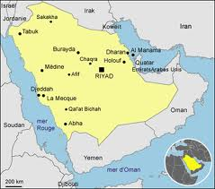
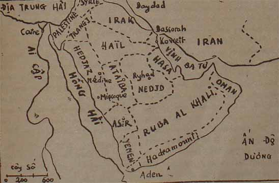

“Con đã học được cái đạo cao nhất
ở đời rồi đó, con đã học được
đạo Vạn năng tức đạo Kiên nhẫn”
(CỔ VĂN Ả RẬP)
Ảnh
Ibn Séoud (1881-1953)
Ngày 14 tháng 11 năm 1928, trong một đại hội của các quốc gia liên hiệp Ả Rập, Ibn Séoud[1] dõng dạt tuyên bố:
“Khi tôi tới với các ông thì tôi thấy các ông chia rẽ nhau, chém giết lẫn nhau, cướp bóc lẫn nhau không ngừng. Những kẻ thương lượng công việc cho các ông, âm mưu để hại các ông, họ gây mối bất hòa giữa các ông để các ông không đoàn kết với nhau được mà mạnh lên. Khi tôi tới với các ông thì tôi yếu lắm, không có một sức mạnh nào cả, trừ sự phù hộ của Thượng đế, vì, như các ông đã biết, lúc đó chỉ có bốn chục người giúp tôi. Vậy mà tôi đã làm cho các ông thành một dân tộc, một dân tộc hùng cường...”.
Những tiếng: “kẻ thương lượng công việc cho các ông” ám chỉ các đế quốc châu Âu, nhất là đế quốc Anh. Trong lịch sử đế quốc của Anh, chưa lần nào họ bị thất bại trên đường ngoại giao, bị hất cẳng một cách chua xót, nhục nhã bằng lần họ đương đầu với Ibn Séoud. Lúc thì cương quyết kịch liệt, lúc thì mềm mỏng, chờ thời, nhưng luôn luôn khôn khéo và nhẫn nại, Ibn Séoud, vị anh hùng Ả Rập, đã lần hồi trong nửa thế kỷ, gạt ảnh hưởng của người Anh mà dựng nên một quốc gia phú cường ở giữa sa mạc, từ bờ biển Hồng Hải tới vịnh Ba Tư.
Khi ông chết, năm 1953, các cường quốc Âu Mỹ đều phục ông. Tờ Paris Match đã viết:
“Quốc vương Ibn Séoud mất đi, để lại cho con ông một vương quốc rộng bằng nửa châu Âu[2], đứng hàng ba trên thế giới về sự sản xuất dầu lửa, và làm lãnh tụ tinh thần cho dân tộc Ả Rập. Một nửa thế kỷ đầy những thủ đoạn anh hùng, rực rỡ, đầy những truyện du hiệp lạ lùng mà chưa có nhà tiểu thuyết kiếm hiệp nào tưởng tượng nổi, đã tạo nên được phép mầu đó. Ở giữa thế kỷ XX mà quốc vương Ibn Séoud đã dựng lên một quốc gia mới ở trên sa mạc[3]“.
Tờ Illustration thán phục:
“Đời của vị quốc vương đó là một sự kiện lạ lùng bực nhất của thế kỷ chúng ta”.
Ngay như kẻ thù của Ibn Séoud, tức người Anh cũng phải khâm phục ông. Tờ Daily Express ở Luân Đôn nhận rằng:
“Ông là người dẻo dai nhất, khôn khéo nhất, thành công nhất trong số các nhà thủ lãnh Ả Rập. Ông chiếm được một vương quốc, bất chấp cả đường lối chính trị của người Anh; ông hợp tác với người Mỹ để khai thác mỏ dầu lửa của ông. Người Anh mà ông thắng trên bàn cờ quốc tế và người Mỹ mà ông bắt phải trả 50 triệu Anh kim mỗi năm, đều phải trọng những đức tính phi thường của ông”.
Mà đức tính của ông đáng cho ta phục nhất là đức kiên nhẫn. Không biết ông có phải là dòng dõi người thanh niên
So sánh Ibn Séoud với Mustapha Kémal thì cả hai đều gan dạ, có nghị lực gang thép, có tài cầm quân, tổ chức, biết nắm lấy cơ hội, lợi dụng những mâu thuẫn giữa các đế quốc Âu, Mỹ để khuếch trương, củng cố thế lực của mình, nhưng Ibn Séoud mềm dẻo hơn nhiều, khôn khéo hơn nhiều, không mắc những lỗi lớn, không mang tiếng là “quân độc tài sát nhân” như Mustapha Kémal hồi về già, mặc dầu nhiều khi cũng phải dùng những phương pháp cương quyết gần như khốc liệt. Coi nét mặt hai ông, ta cũng thấy khác xa: Ibn Séoud tuy to lớn, lực lưỡng, cao tới hai thước năm phân, mà vẻ mặt lại đôn hậu, mắt sâu mà sáng, môi dày, miệng mỉm cười hiền từ, không mím chặt lại như Mustapha Kémal.
Sự nghiệp của hai ông cũng không giống nhau. Kémal sinh vào thời đế quốc Thổ quá rộng mà suy tàn, phải cắt bớt đất đai đi để giữ lực lượng, rồi tìm cách thống nhất những dân tộc khác nhau về ngôn ngữ, tôn giáo, phong tục thành một khối chặt chẽ, sau cùng Âu hóa hoàn toàn khối đó để theo kịp các nước văn minh. Ibn Séoud trái lại, sinh ở giữa một sa mạc mênh mông, gồm nhiều bộ lạc cùng một ngôn ngữ, lịch sử, tôn giáo, nhưng ở rải rác khắp nơi, chia rẽ nhau, cướp bóc lẫn nhau nên công việc đầu tiên của ông là phải dùng sức mạnh bắt những bộ lạc đó phải phục tùng mình rồi xâm chiếm những tiểu quốc ở chung quanh, lập thành một quốc gia cường thịnh, có thể làm các quốc gia Âu, Mỹ phải kính nể, và muốn cho những tiểu quốc đó đoàn kết với nhau, ông chủ trương giữ tinh thần cổ truyền, không cho phong tục, tôn giáo chịu ảnh hưởng của phương Tây. Ông là một tín đồ thành kính của đạo Hồi; còn Mustapha Kémal là một nhà cách mạng có tân học, mê những học thuyết của Rousseau, Montesquieu. Nhưng cả hai đều thành công rực rỡ, và nhờ hai ông mà dân tộc Thổ và dân tộc Ả Rập mở mặt được với thế giới.
°
° °
BÁN ĐẢO Ả RẬP QUA CÁC THỜI ĐẠI
Muốn hiểu sự nghiệp của Ibn Séoud, chúng ta cần biết qua về địa thế, dân tộc và lịch sử Ả Rập.
Xứ Ả Rập là một bán đảo rộng 2,2 triệu cây số vuông, ba phía là biển, ở giữa là một cao nguyên mênh mông trên cát dưới đá, cháy khô dưới ánh nắng chang chang, đi hàng chục hàng trăm cây số mới gặp một giếng nước, chung quanh có ít cây chà là và vài cái lều của bọn người du mục. Chỉ ở bờ biển mới thấy ruộng rẫy. Hai miền phì nhiêu nhất là miền Yemen ở phía Nam trên cái mỏm, một bên là Hồng Hải (Mer Rouge), một bên là vịnh Aden, và miền Syrie ở phía Bắc, trên bờ Địa Trung Hải. Dân cư miền Yemen rất đông đúc và tăng lên rất mau, mà diện tích trồng trọt được thì có hạn, kỹ nghệ cùng thương mãi tới dầu thế kỷ XX vẫn còn thấp kém nên miền đó luôn luôn bị nạn nhân mãn. Dân chúng nếu vượt biển để qua miền Soudan thì gặp một xứ còn khô khan, hoang dã hơn xứ Ả Rập nữa, sống không nổi; mà cũng không thể ngược theo bờ biển Hồng Hải vì bị các dân tộc khác chận đường, nhất định không cho nhập cảnh, nên họ phải dắt díu nhau di cư vào giữa bán đảo, tới miền Nedjd, miền Quasim, miền Hamad để tìm cách sinh nhai. Thành thử trong hàng chục thế kỷ, có những luồng sóng người cuồn cuộn từ phương

Bản đồ Ả Rập Saudi
Nhưng khi người ta đã quen với đời sống rồi thì người ta thấy yêu cái cảnh sa mạc hơn là người nông dân yêu đồng ruộng. Một nhà tâm lý nào đó đã nhận xét đúng: cảnh vật càng khô khan, đời sống càng cực khổ bao nhiêu, người ta càng quyến luyến với quê hương bấy nhiêu. Sống giữa sa mạc, người Ả Rập mê những cảnh hoàng hôn rực rỡ, những cảnh cát bụi mịt trời, những cây chà là xanh mướt bên bờ nước, nhất là sau những cơn nắng cháy da, mặt trời đã lặn, gió mát hiu hiu, nằm trên cát, bên cạnh con lạc đà, gối đầu lên cánh tay mà ngắm những ngôi sao lấp lánh trên nên trời thăm thẳm, hoặc nhìn bóng trăng xanh dịu trải lên những động cát thoai thoải, trong một cảnh vô biên, tịch mịch, thì lòng họ rung lên một điệu trầm trầm, họ nhớ lại những thời oanh liệt, mà muốn ca ngợi công lao tổ tiên; hoặc suy nghĩ về cái mênh mông huyền bí của vũ trụ, do đó họ thành một thi sĩ hoặc một nhà tu hành.
Tóm lại, sa mạc đã tạo ra ba hạng người: hạng chiến sĩ coi cái chết nhẹ như không; hạng thi sĩ thích một cuộc đời phóng đãng; và hạng tu sĩ kính ngưỡng Thượng đế, muốn hiểu cái bí mật của tương lai. Người Ả Rập tự hào rằng đã tặng cho nhân loại bốn vạn người tiên tri, đã để lại cho chúng ta vô số những lời sấm truyền, mà lịch sử cũng chứng thực rằng ít gì cũng có trên trăm nhà tiên tri sinh trên bãi sa mạc Ả Rập.
°
° °
Nhà tiên tri nổi danh nhất, ảnh hưởng lớn nhất đến dân tộc Ả Rập là Mahomet (570-632).
Chẳng những ông là một nhà tiên tri mà còn là một thi sĩ, một chiến sĩ nữa; ông ấp ủ tất cả những hoài bão của dân tộc Ả Rập và có đủ tài, chí để thực hiện những hoài bão đó, nên lập nên công nghiệp rất lớn cho nòi giống.
Hồi trẻ nghèo, ông phải làm hướng đạo cho các thương đội qua sa mạc, đi khắp nơi này nơi khác, tiếp xúc với mọi giống người. Ông thấy người Ả Rập chia rẽ, tranh giành nhau, cướp bóc nhau mà đau lòng; nuôi cái mộng một ngày kia quy tụ họ được, thống nhất họ được để tạo nên một quốc gia mạnh mẽ.
Năm 25 tuổi, ông vô núi Hira, gần thành Mecque[4] trầm tư trong một thời gian, như Đức Phật dưới gốc Bồ đề, và lần lần ánh sáng hiện ra trong óc ông. Ông nghĩ ra rằng được nếu muốn thống nhất dân tộc thì phải tạo cho họ một tôn giáo chung - hồi đó người Ả Rập còn theo đạo đa thần, mỗi bộ lạc thờ một vị thần riêng - mà muốn cho tôn giáo được mọi người theo thì phải dùng võ lực, chiến thắng tất cả những bộ lạc khác.
Tìm được “chánh đạo” rồi, ông “hạ san”, tự xưng là nhà tiên tri, đem truyền bá tư tưởng của mình trong số người thân, rồi trong một nhóm môn đệ gồm ba, bốn chục người. Nhờ hồi trước tiếp xúc với những người theo đạo Ki Tô và Do Thái, ông hiểu được ít nhiều về hai đạo đó, phỏng theo mà lập nên đạo Hồi hồi. Giáo điều căn bản tóm tắt trong câu: “Chỉ có một đức chúa duy nhất là Allah và một tiên tri của ngài là Mahomet”. Sống thì phải phục tùng ý muốn của Chúa. Sự phục tùng ấy gọi là Islam, chết thì phải theo sự phán quyết của Chúa. Đại loại những lời khuyên răn các tín đồ tức là Mulsuman, cũng như các cấm điều trong các tôn giáo khác. Khác hẳn Đạo Phật là điều này: Chiến tranh nào có mục đích truyền bá “chính đạo” sẽ là thánh chiến. Bất kỳ ai, cả những kẻ đui và cụt tay đều phải nhập ngũ để chiến đấu vì Chúa. Chỉ những kẻ điên, con nít và đàn bà là được ở nhà, nhưng có bổn phận phải tố cáo, phải giết những kẻ đào ngũ. Khẩu hiệu của tín đố là: “Thiên đàng ở trước mặt, mà địa ngục ở sau lưng”.
Một lần đứng trước một nhóm đồ đệ khoảng bốn chục người, Mahomet tuyên bố:
- Từ nay ta sẽ sống và chết với các ngươi, máu của các ngươi là máu của ta, các người thua là ta thua, mà các ngươi thắng là ta thắng.
Một người trong đám hỏi:
- Nhưng nếu chúng tôi bị giết vì ngài thì được phần thưởng nào?
Mahomet đáp liền:
- Được lên Thiên đàng.
Những cuộc đàm thoại như vậy được tín đồ ghi chép lại Thánh kinh Coran, lời rất trau chuốt, hoa mỹ vì Mahomet có tâm hồn thi sĩ. Ngoài những đoạn giảng về đức tin, kinh còn dạy về khoa học, vệ sinh, luật pháp. Các sử gia hiện nay phải nhận rằng thời Trung cổ, khắp thế giới không có bộ luật nào đầy đủ chi tiết và thực tế như kinh Coran.
Khi đã có một số tín đồ cảm tử theo, ông bắt đầu dùng tài cầm quân của mình để đánh cướp các thương đội, gây lực lượng để xâm chiếm các bộ lạc, bắt họ qui phục, theo đạo Hồi hồi. Lần này ông chiếm được Médine, Mecque, và khi lâm chung, hồi 62 tuổi, ông làm chủ toàn xứ Ả Rập. Quốc gia Ả Rập thành lập, và từ đó mỗi ngày một mạnh.
Sau Mahomet, Omar tiếp tục công việc xâm lăng để truyền đạo, và tới thế kỷ thứ VIII thì đế quốc Ả Rập toàn thịnh, rộng hơn cả đế quốc Hi Lạp hồi xưa: phía Đông lan qua Ba Tư và một phần Ấn Độ, phía Tây gồm một vùng mênh mông từ Ai Cập tới bán đảo Y Pha Nho, phía Bắc giáp Caucase và Tây Bá Lợi Á, bao nhiêu đảo lớn nhỏ trong Địa Trung Hải đều thuộc Ả Rập cả. Họ tới đâu thắng đấy, bắt kẻ địch phải lựa một trong hai con đường: hoặc thừa nhận Chúa Allah của họ và phục tùng họ, hoặc chết. Họ dám sai sứ qua Trung Hoa buộc hoàng đế Trung Hoa theo đạo họ (khoảng 705-707) nhưng vì xa xôi quá, họ không dám tiến quân. Mãi tới năm 732, họ sắp tới sông Loire trên đất Gaule thì dân tộc Franc dưới sự chỉ huy của Charles Martel đánh cho đại bại ở gần
Càng thắng, họ càng phục lời tiên tri của Mahomet: “Thiên đàng ở trước mặt, Địa ngục ở sau lưng” là đúng. Họ tiến tới đâu cũng thấy những cảnh rực rỡ, những đời sống vui tươi y như cảnh thiên đàng tả trong Thánh kinh của họ. Trong Thánh kinh cũng có đoạn này đấy ư?
“Sau khi giải khát ở hồ nước của đấng Tiên tri, tín đồ sẽ vô Thiên đàng và được hưởng những của cải mênh mông. Mùa xuân ở đó bất tận, vườn tược xanh tốt quanh năm, đủ các thứ suối róc rách dưới tàn cây: suối nước thơm tho, suối rượu, suối sữa, suối mật. Cây thì cao, bóng thì mát mà có đủ các thứ trái. Rồi nem công chả phượng - ba trăm món ăn mỗi bữa- ăn không chán... Thượng đế ban lệnh: “Các con ăn uống cho thỏa thuê đi để bù công khó nhọc ở dưới trần. Bảy mươi hai nàng tiên mắt đen lánh, xiêm y rực rỡ, y như những ngọc trai trong vỏ xa cừ, sẽ múa hát tưng bừng để tăng cái vui cho bữa tiệc”.
Những lời hứa hẹn đó làm cho dân Ả Rập đói khát trong sa mạc mơ ước bao lâu nay thì bây giờ, nhờ chiến thắng, nhờ hi sinh cho Chúa, họ được Chúa cho hưởng đủ: này là những suối mật ở Ai Cập, những suối sữa ở Y Pha Nho, những lê, cam ở Ba Tư, nho, táo ở Y Pha Nho và hàng vạn, hàng ức nàng tiên ở Bagdad, ở Caire, ở Byzance, ở Crète, ở Cordoue. Nhìn lại sau lưng họ thì bán đảo Ả Rập toàn đá với cát, quả thực là một cảnh địa ngục! Vạn vạn tuế Mahomet!
Một khi đã được lên Thiên đàng thì không còn ai muốn trở lại cảnh Địa ngục nữa, cho nên dân Ả Rập định cư ngay ở những thuộc địa của họ, không nhắc tới những tên Yemen, Nedjid, nơi chôn nhau cắt rốn của họ nữa. Và bãi sa mạc mênh mông yên tĩnh trở lại, gần như bất động, gần như chết hẳn. Chỉ còn ít đoàn du mục đói rách lang thang dưới ánh nắng thiêu người với mấy con lạc đà ốm yếu, đi tìm ít ngụm nước, ít trái chà là chung quanh những giếng nước.
Sống xa hoa thì phải suy. Bắt đầu từ thế kỷ thứ XI, những thuộc địa của họ mạnh lên, chống cự lại họ. Trước hết là người Franc chiếm miền Bắc bán đảo: Syrie,
Cuối thế kỷ XII, một vị anh hùng Ả Rập, Abdul Wahab theo đường lối của Mohamet, dùng đúng chính sách của Mahomet - nghĩa là mượn sức của tôn giáo và của binh sĩ - muốn gây lại thời oanh liệt cũ, thống nhất được xứ Nedjd và Hasa. Qua thế kỷ sau, Séoud[6] chiếm thêm được Hedjaz, vô Thánh địa Mecque, nhưng khi Séoud tử trận, các con bất tài, bị Thổ diệt hết.
Dân Ả Rập vẫy vùng được một thời rồi lại nép mình dưới chân Thổ, lại thiêm thiếp ngủ dưới ánh nắng gay gắt, trong một cảnh yên tĩnh, chỉ thỉnh thoảng giật mình vì một tiếng súng nổ hoặc tiếng vó ngựa của một tên cướp đường ban ngày.
MẤT NƯỚC VÀ LANG THANG
Ibn Séoud sinh ra trong hoàn cảnh đó, ở Ryhad, năm 1881, cha mẹ đặt tên là Abdul Aziz.
Thời đó, bán đảo Ả Rập chia ra làm mười lăm, mười sáu tiểu bang, Ryhad là kinh đô của tiểu bang Nedjd, ở trung tâm bán đảo.
Thân mẫu ông là con gái một hào mục ở phương
Tới tuổi đi học, Abdul Aziz, theo lệnh cha vào nhà tu học thuộc lòng kinh Coran, tới bảy tuổi đã phải theo người lớn dự lễ và tụng kinh mỗi ngày năm lần ở giáo đường. Tám tuổi đã biết cầm gươm, bắn súng, cưỡi ngựa, phi nước đại mà không cần yên cương. Phải đi theo các thương đội khắp xứ để tạp chịu cực khổ, chân đi không trên những phiến đá nóng như nung. Ăn uống thì chỉ có một nắm chà là và một bầu nước giếng. Ngủ thì có khi chỉ ba giờ một đêm, và sáng nào cũng phải dậy hai giờ trước khi mặt trời mọc, dù là mùa đông, gió bấc thổi buốt tới xương cũng vậy.
Nhờ tiên thiên rất mạnh, Abdul Aziz chịu được những cực khổ đó - sau này ông cao tới hai thước năm phân, to lớn như một người khổng lồ - hoạt động suốt ngày không nghỉ, thắng tất cả bạn bè trong những cuộc vật lộn và chạy đua. Tính tình nóng nảy: mỗi lần nóng giận thì mắt đó ngầu, nhưng cơn giận nguôi đi thì lại vui vẻ, hòa nhã.
Sở dĩ thân phụ ông tập cho ông sống khắc khổ là muốn cho ông lập được sự nghiệp lớn. Hồi bảy tuổi có lần ông nghe cha dạy:
“Con phải hiểu bổn phận của con. Sau này con phải thống nhất tổ quốc và con sẽ gặp nhiều trở ngại. Con phải tập sống một đời thiếu thốn, chiến đấu, và tập trung ý nghĩ vào mục đích duy nhất đó. Đừng bao giờ thất vọng vì nghịch cảnh. Và khi nào thấy mù mịt trên đường đời thì con phải chịu kiên nhẫn, đợi lúc Chúa chỉ dẫn cho”.
Suốt đời ông nhớ lời gia huấn đó, và cũng nhớ bài học kinh khủng sau này nữa.
Như trên tôi đã nói, hai tiểu bang Hail và Nedjd vốn có hiềm khích với nhau. Đầu năm 1890, quốc vương Hail là Rashid đem quân diệt hai người anh của Abdul Rahman, chiếm kinh đô Ryhad, đặt một viên tướng là Salin làm thống đốc Ryhad. Theo tục thì Rahman được lên ngôi kế vị hai anh. Salim muốn từ cho tuyệt hậu họa, ngoài mặt làm bộ thân mật, xin được vô yết kiến Rahman, nhưng dặn các lính thị vệ theo hầu là hễ khi nào có gia đình Rahman hội họp đủ mặt ở đại diện thì sẽ bủa vây và giết cho không còn một đứa con đỏ.
Rahman biết được âm mưu đó, ra tay trước. Khi Salim làm lễ rồi, ung dung ngồi uống cà phê, bỗng ngó chung quanh hỏi:
- Thưa Ngài, tôi muốn được tỏ lòng tôn kính tất cả gia đình của Ngài, vậy Ngài có thể cho vời chư vị đó lại cả đây được không?
Thì Rahman rút ngay con găm ra và tất cả bộ hạ tuốt gươm ùa vào trong điện, trói Salim lại, giết tên lính thị vệ của y, rồi quẳng Salim xuống một giếng nước. Abdul Aziz lúc đó mới mười tuổi, đứng sau lưng một tên nô lệ lực lưỡng, có bổn phận che chở cho ông, kinh khủng nhìn cảnh chém giết ghê gớm đó. Mình ông vấy máu và hình ảnh khắc ghi trong đầu ông. Sau này nhắc lại chuyện ấy, ông bảo:
- Lần ấy tôi đã học được điều này là gặp nguy cơ thì phải ra tay trước.
Nhưng Rahman chống cự không nổi với Rashid, nên phải bỏ kinh đô, trốn xuống phương Nam, ở nhờ dân tộc Mourra, lang thang hết nơi này, nơi khác trong một miền hoang vu khô cháy với một bọn tùy tùng mỗi ngày một thưa thớt. Họ chịu đói, chịu khát, lại làm cữ nữa, phải đào rễ cây mà ăn. Một hôm, tuyệt vọng, Rahman kêu Aziz và ba người thị vệ trung kiên lại, bảo:
- Chúa bắt chúng ta chết ở nơi này rồi. Chúng ta phải tuân lệnh Chúa. Thôi, quỳ cả xuống mà tụng kinh và cảm ơn Chúa.
Aziz phản kháng:
- Không! không chịu chết ở đây! Phản rán sống. Lớn lên con sẽ làm vua xứ Ả Rập.
Sáng hôm sau có cứu tinh tới. Một đoán kỵ sĩ của vua Koweit lại đón gia đình Rahman về Koweit lánh nạn. Koweit là một xứ nhỏ nhưng giàu ở phía Tây Bắc vịnh Ba Tư. Rahman tin là được Allah cứu. Đều chắc chắn là vua Koweit là tay sai của vua Thổ, mà vua Thổ thấy Rashid chiếm trọn tiểu bang Nedjd, ngại rằng uy thế của Nedjd quá lớn, sau này khó trị, nên muốn cứu Rahman để khi nào cần, sẽ giúp đỡ cho mà chống lại với Rashid. Vẫn là chính sách vạn cổ: “Chia để trị”.
Ở Koweit, gia đình Rahman được tiếp đãi long trọng. Châu thành là một tỉnh lớn nằm trên bờ biển - người ta gọi là Marseille của phương Đông - ghe tàu tấp nập, ngoài phố chen vai đủ các giống người từ phương Đông qua (Ấn Độ, Ba Tư, cả Nhật Bổn nữa), từ phương Tây tới (Anh, Pháp, Đức, Ý...) và từ phương Bắc xuống (Nga, Thổ). Nơi đó là ngưỡng cửa thông châu Âu với châu Á. Người Đức muốn mở một đường xe lửa từ Bá Linh tới vịnh Ba Tư, mà ga cuối cùng là Koweit. Nga cũng muốn có một trục giao thông từ Moscou tới Bagdad, Bassorah trên con sông
Một trong những nhà quyền thế bị người Anh mua chuộc là Mubarak, bào đệ của quốc vương Koweit. Mubarak là một tên cờ bạc, điếm đàng, tiêu hết gia sản của ông cha để lại rồi qua Ấn Độ “làm ăn”. Không biết hắn làm ăn cái gì mà tiền bạc vô như nước. Ai hỏi hắn thì hắn cúi mặt, nhũn nhặn đáp: “Nhờ Allah phù hộ độ trì”.
Năm 1897, hắn về Koweit, bị vua anh mắng chửi tàn tệ, hắn nhẫn nhục chịu. Nhưng Aziz thích hắn lắm mà hắn cũng thương Aziz vì thấy chàng thông minh, dĩnh ngộ. Hồi đó Aziz đã có vợ - chàng kết hôn với công chúa Janhara - vẫn nuôi cái mộng tiễu phạt Rashid, để khôi phục lại sơn hà, có lần nhảy lên lưng một con lạc đà băng vào sa mạc để hô hào các bộ lạc nổi lên chống Rashid, nhưng bộ lạc nào mà nghe lời một em bé miệng còn hơi sữa đó, cho nên ba ngày sau chàng lủi thủi trở về Koweit, làm trò cười cho thiên hạ.
Shaikh Mubarak đã không mỉa mai Aziz mà trái lại, ân cần đón về nhà, dạy cho một chút sử ký, địa lý, toán học và Anh văn, rồi lại cho làm thư ký riêng. Khách khứa tới lui nhà Mubarak sao mà nhiều thế! Đủ các hạng người, từ con buôn đến các nhà thám hiểm, chủ ngân hàng, chính khách... đủ các giống người, từ Anh, Pháp đến Đức, Nga...
Rồi một đêm, Mubarak lẻn vào cung, giết anh, lên ngôi vua. Vua Thổ cho như vậy là phản nghịch, ra lệnh cho Rashid đem quân lại dẹp. Xứ Koweit đã nhỏ mà quân đội lại không luyện tập. Mubarak thua, chạy về thành trốn. Nguy cơ đã tới. Nhưng lạ chưa, đúng lúc đó một thiết giáp hạm của Anh hiện ở bờ biển Koweit nã súng về phía quân của Rashid và Rashid phải nuốt hận mà rút quân về. Bây giờ người ta mới hay là Mubarak làm tay sai cho người Anh. Thổ đã thua Anh một nước cờ, địa điểm Koweit quan trọng quá, Anh không cướp của Thổ thì Đức hay Nga cũng chiếm mất.
Biến chuyển lạ lùng đó làm cho Aziz suy nghĩ và mở mắt ra. Trông cậy ở đường gươm lưỡi kiếm, ở lòng dũng cảm, trung thành của quân đội thì hỏng bét. Phải có ngoại giao, có mánh khoé chính trị nữa. Và cái xứ Ả Rập ngày nay vậy mà quan trọng chứ. Từ trước cứ tưởng đuổi được tụi Thổ thì sẽ được độc lập, bây giờ mới thấy rằng công việc khó khăn vô cùng: bên cạnh Thổ còn có Anh, Đức, Nga nữa mà đàn kên kên này mới nguy hiểm hơn nhiều. Vậy chính sách là phải chiến đấu đã đành rồi, mà đồng thời cũng phải tính toán mưu mô, tùy gió xoay chiều, đợi hoàn cảnh thuận tiện để len lõi, tiến lui, chớ không thể sơ suất được. Lần này là lần thứ ba, chàng học được một bài học quan trọng.
Lúc đó Anh đương mạnh, Aziz hướng về Anh, muốn nhờ Anh giúp để trả thù Rashid, nhưng người Anh chê chàng là con nít, không thèm trả lời. Chàng quay lại năn nỉ Mubarak năm lần bảy lượt. Bực mình quá muốn tống chàng đi cho rảnh, Mubarak thí cho chàng ba chục con lạc đà ốm yếu, ba chục cây súng cũ kỹ, hai trăm đồng tiền vàng và dặn kỹ nên việc hay không cũng mặc, không được lại quấy rầy nữa.
Chàng không đòi gì hơn. Được điều khiển một binh lực dù nhỏ mọn cũng thú rồi. Chàng định kế hoạch: phải đích thân vào hang cọp, chiếm lấy cung điện Ryhad - nói là cung điện chứ thực sự không bằng một biệt thự trung bình ở Saigon - rồi kiểm soát cả kinh đô, kiểm soát bộ lạc Nedjd. Lúc đó có đất dụng võ rồi, mới sai “sứ thần” tiếp xúc với người Anh, xem người Anh còn chê cái mặt này nữa không nào.
Chàng đem đại sự bàn với cha, cha mắng là vọng động, chàng không nghe, để vợ và con thơ lại cho cha trông nom rồi tiến sâu vào sa mạc với ba chục con lạc đà ghẻ và 30 cây súng tồi. Lúc đó nhằm mùa thu năm 1901, chàng mới được hai mươi tuổi.
KHÔI PHỤC LẠI GIANG SAN
Và chuyến đi đó đã thành công mới lạ chứ. Thực gan dạ phi thường.
Nhưng không phải là thành công một cách dễ dàng. Mới đầu Aziz đánh du kích những đồn nhỏ và thương đội, cướp được khí giới và tiền bạc rồi lưu động đi nơi khác liền. Chiến lợi phẩm phân phát hết cho thủ hạ. Người ta đồn nhau rằng Aziz giàu có vẻ hào phóng, trả lương quân lính rất hậu, nên một số đông quân lưu manh ùa theo chàng. Nhưng các hào mục không dám theo vì thấy lực lượng của chàng chưa có gì mà sự trừng phạt của Rashid thì đáng kinh. Chàng tới đâu, người ta cũng đề phòng trước, không cướp phá thêm được gì nữa. Tiền cạn, lạc đà chết mòn, thủ hạ trốn đi lần lần. Chàng đành phải ẩn náu ở phương
Abdul Rahman sai người tới đó khuyên chàng về đợi một cơ hội khác. Chàng triệu tập thủ hạ lại, bảo họ:
- Tương lai không có gì là sáng sủa. Chúng ta còn phải chịu đói khát, cực khổ nhiều hơn nữa. Riêng phần tôi, tôi nhất định chiến đấu cho đến cùng, dù là chiến đấu một mình, dù chết cũng không sợ. Nhưng tôi không nỡ bắt buộc các anh em phải theo tôi. Vậy ai muốn quay về với cha mẹ, vợ con thì cứ về.
Họ bỏ đi gần hết, chỉ còn lại một chiến sĩ can đảm tên Jilouy, em trai chàng tên là Mohammed, ba chục người Ả Rập đi theo chàng từ Koweit, với mười người mới theo sau này, tổng cộng khoảng bốn chục người.
Họ thề đồng sinh đồng tử với nhau.
Aziz đổi chiến lược, phải chiếm kinh thành một cách chớp nhoáng. Muốn vậy phải ẩn náu trong hai tháng sao cho địch tưởng mình chết rồi. Thời kỳ này là thời kỳ gian truân nhất đời chàng. Trốn vào đâu bây giờ? Trong sa mạc không có rừng, núi, nhà cửa, mà hễ bắn một phát súng để giết con mồi thì tiếng súng vang dội lên hàng chục cây số chung quanh, đốt một cành cây để thui con dê thì khói bay lên cách năm cây số cũng trông thấy. Mà nào có phải trốn một mình. Trên bốn chục người! Họ phải núp suốt ngày sau những động cát, xa đường đi, nhịn ăn, nhịn uống, đêm xuống mới dám bò đi kiếm nước hoặc chà là. Thủ hạ của chàng bất bình, thà chiến đấu rồi chết chứ không chịu nổi một cuộc đời như vậy. Này nào chàng cũng phải an ủi họ, nhắc lại lời thề đồng sinh đồng tử và ban đêm phải canh gát cho họ ngủ. Các nhà cầm quyền Ryhad tưởng chàng đã chết vì đói khát nên không đề phòng cẩn mật nữa.
Lúc đó chàng mới ra tay, lặng lẽ đêm đi, ngày nghỉ, tiến lên phương Bắc. Khi cách Ryhad mười cây số, để một số người ở lại bên cạnh một giếng nước với bầy lạc đà, bảo họ nếu hai mươi bốn gờ sau mà không được tin tức gì của chàng thì coi chàng như chết rồi, và ai nấy tìm đường mà về Koweit.
Rồi chàng dẫn ba chục thủ hạ tiến tới sát chân thành, đến một cây chà là, để Mohammed ở lại với hơn hai chục người làm hậu thuẫn, dặn nếu trưa hôm sau không có tin tức gì thì đại sự đã hỏng, mau mau rút lui đi: chỉ còn chàng, Jilouy và sáu người nữa là leo vô thành, gõ cửa nhà một người quen hỏi thăm tin tức, biết rằng viên thống đốc ở trong đồn Mamak với 24 tên lính, mỗi buổi sáng ra cửa đồn khám ngựa một lần, còn tư dinh của ông ta thì không có lính canh. Bọn Aziz leo tường vô được tư dinh, trói chặt vợ viên thống đốc lại mà gia nhân không hay.
Sáng hôm sau, viên thống đốc vừa ra khỏi đồn để khám ngựa thì Aziz và Alouy phóng lai đâm, trong khi sáu thủ hạ của chàng cản đường lính trong đồn. Chỉ trong một giờ là đồn bị chiếm, viên thống đốc bị giết, những lính sống sót bị cầm tù. Bên Aziz có hai thủ hạ thiệt mạng. Dân chúng Ryhad hay tin đó, tự động đánh phá những đồn khác trong tỉnh. Tới giữa trưa, Aziz đã khôi phục lại kinh đô của tổ tiên. Đúng giờ đó ở Koweit, vợ chàng sanh thêm một đứa con trai, đặt tên là Saud, sau này nối nghiệp chàng. Danh của chàng bắt đầu vang lên khắp sa mạc.
Ít lâu sau, quốc vương Rahman về Ryhad báo cáo với dân chúng rằng, từ nay Abdul Aziz sẽ thay ông nắm quyền chính trị, còn ông chỉ giữ quyền tôn giáo.
Hay tin đó, Rashid vỗ đùi cười ha hả:
- Mắc bẫy ta rồi
Rồi đem quân vây đánh Aziz. Nhưng Aziz đâu có dại, ngồi đó cho bị vây; chàng rút quân xuống phương
Một lần đạn nổ ở trước mặt, Aziz văng mất một ngón tay và bị thương nặng ở đầu gối, máu ra rất nhiều, té xỉu, nhưng khi thấy hàng ngũ rối loạn, chàng nghiến răng leo lên lưng ngựa, tiếp tục chiến đâu để gây lại lòng tin cho sĩ tốt.
Tình hình có vẻ nguy ngập, chàng phải chống nạng đi khắp tỉnh nay đến tỉnh nọ, hô hào dân chúng, giảng cho họ hiểu rằng chiến tranh này không phải một sự tranh giành ngôi báu mà là vấn đề sinh tử cho toàn dân vì Rashid là tay sai của Thổ. Thấy gương can đảm của chàng, mọi người vững bụng, hăng hái chiến đấu, bao vây và diệt được một đại đội Thổ ở Shinanah.
Lợi dụng thắng thế đó, Aziz nhờ Mubarrak làm trung gian để điều đình với Thổ vì chàng biết không đủ sức chống cự với cả Thổ lẫn Rashid. Vua Thổ thấy hao quân tổn tướng mà miền Nedjd không phong phú gì, lại ngại nếu diệt Nedjd thì xứ Hail sẽ quá mạnh, nên bằng lòng nhận Abdul Aziz làm vua xứ Nedjd, nhưng Aziz phải để cho quân đội Thổ đóng ở hai nơi tại phía Bắc Nedjd, gần biên giới Hail.
Dân chúng Nedjd hay tin hiệp ước đó, bất bình cho rằng mình bị bán đứng. Aziz phải giảng cho họ:
- Hãy khoan, đừng vội nóng. Còn dở cuộc mà, đã xong đâu.
Ông đổi chiến lược: không vật lộn nữa, mà thoi ngầm. Lính Thổ lại đóng ở Quasim. Aziz sai quân lính giả làm quân bất lương đánh phá, cướp bóc lính Thổ trên các đường giao thông. Đêm nào cũng có những vụ nho nhỏ xảy ra, quân Thổ không sao tiểu trừ được, mất lương thực, mất khí giới, tối ngủ không yên. Chỉ trong một năm, họ mất tinh thần, chỉ mong được về xứ sở. Chính phủ Thổ yêu cầu Aziz trị giùm những khảo thấu đó, Aziz mỉm cười nhận lời, nhưng tình hình đã chẳng giảm mà còn tăng. Thời đó Thổ đã là một con bệnh hấp hối, bị Anh, Nga, Pháp dòm ngó, các thuộc địa muốn nổi lên mà trong nước các đảng cách mạng bắt đầu hoạt động dữ. Aziz biết vậy, chờ trái cây chín mùi rồi lượm, khỏi phải phí sức. Quả nhiên, vua Thổ thấy tình hình ở Quasim không êm, muốn hối lộ Aziz để tiểu loạn giùm cho, Aziz đáp rằng không ai mua chuộc được mình. Cuối năm 1905, Thổ đành rút hết quân ở Quasim về.
Lúc đó Aziz mới đem toàn lực tấn công Rashid. Một đêm bão cát mù mịt, xuất kỳ bất ý, ông cầm đầu một đội quân tiến như bay về về phía trại Rashid. Quân của Rashid không kịp trở tay, hầu hết bị đâm chết ở trong lều.
Khi khải hoàn về Ryhad, ông được toàn dân hoan hô. Rashman nhường nốt quyền tôn giáo cho ông, và ông chính thức lên ngôi vua, lấy hiệu là Ibn Séoud[7]. Ông triệu tập quân sĩ, dõng dạc tuyên bố:
- Chúng ta đã làm được nhiều việc, nhưng so với những việc còn phải làm thì bấy nhiêu chưa thấm vào đâu cả. Ta không bắt buộc ai phải tuân lệnh ta đâu. Nếu các người theo ta thì ta hứa chắc với các người rằng, nhờ Allah phù hộ, các người sẽ được vẻ vang. Ta sẽ làm cho các người thành một dân tộc lớn, thịnh vượng hơn tất cả những thời trước. Tôn giáo chúng ta sẽ được phục hưng, quân ngoại xâm sẽ bị đuổi ra khỏi cõi. Cho nên ta dặn các người: đừng để binh khí sét đi! Phải sẵn sàng để chiến đấu nữa! Tiến tới! Phục hưng tôn giáo và chiếm cõi Ả Rập.
Năm đó ông mới hai mươi lăm tuổi. Trong lịch sử nhân loại, có lẽ không có một vị quân vương khai quốc nào mà thành công sớm như vậy.
°
° °
THỐNG NHẤT XỨ Ả RẬP
Tuy Rashid bị giết, nhưng xứ Hail chưa qui thuận. Một bộ lạc ở giáp ranh Koweit, bộ lạc Mutair, không chịu phục tòng. Ibn Séoud đem quân tới, đốt cháy làng mạc, treo cổ hào mục. Vừa xong thì ông phải trở về phương
- Các người là thần dân yêu mến của ta. Phải trừng trị các người, ta đau lòng lắm. Vậy đừng bắt ta phải ra tay lần nữa. Các người về lựa lấy một viên thống đốc nào trung thành ta có thể tin được, ta sẽ để cho các người tự cai trị lấy nhau, miễn là đừng phản ta.
Ông dư biết tính tình của người Ả Rập, họ trọng nhất sức mạnh và sự công bằng. Ông đã tỏ cho họ thấy rằng ông có đủ hai đức đó. Từ nay họ sẽ theo ông. Thế là tình hình nội bộ được yên.
Nhưng tình hình ở ngoài có vẻ đáng lo. Năm 1908, đảng Thanh niên Thổ làm cách mạng, thành công, vua Méhémet V lên thay Abdul Hamid, và nội các mới của Thổ muốn gây lại lực lượng, củng cố các thuộc địa trong số đó có Ả Rập
Lại thêm những hoạt động của Anh mỗi ngày một tăng. Anh trước kia giúp Mubarrak chống lại với Rashid là có ý dòm ngó Koweit. Quả nhiên năm 1903, Koweit phải nhận sự bảo hộ của Anh. Rồi Anh với Nga thỏa thuận nhau để chia xẻ Ba Tư: phía Bắc Ba Tư về Nga, phía
Ibn Séoud đâm lo: bầy chó sói đó bao vây khắp phía rồi, không còn đường ra biển nữa, chịu chết cháy trên bãi cát và đá này ư? Chưa hết cái nạn Thổ, đã đến cái nạn Anh, mà tụi Anh mạnh mẽ, xảo quyệt gấp mười tụi Thổ.
Càng nguy thì càng phải tính gấp. Phải mở một đường ra biển. Con đường gần nhất là chiếm cứ xứ Hasa ở phía Đông Nedjd. Xứ đó là thuộc địa của Thổ, mà Koweit ở phía Bắc Hasa là xứ bảo hộ của Anh. Chiếm Hasa thì sợ Anh can thiệp, như vậy phải đương đầu với cả Anh lẫn Thổ. Đành phải nhờ Mubarrak dò ý người Anh trước đã. Mubarrak bảo chính phủ Anh rằng cần phải đuổi người Thổ ra khỏi vịnh Ba Tư, mà chính người Anh chiếm Hasa thì các nước khác sẽ la ó, còn để Ibn Séoud chiếm thì chỉ là nội bộ giữa các dân tộc Ả Rập với nhau, sẽ không lớn chuyện. Anh nghe bùi tai, bằng lòng làm ngơ.
Ibn Séoud bèn cho người vào nội địa Hasa do thám, rồi xuất kỳ bất ý, đương đêm cho quân lính leo thành, tới sáng thì chiếm được kinh đô Hasa mà dân chúng ngủ say không hay gì cả.
Các nhà cách mạng Syrie thấy chiến công của ông oanh liệt, muốn nhờ ông tiếp tay để đuổi Thổ ra khỏi Syrie, ông từ chối, tự xét sức chưa đủ, cần phải tổ chức lại nội bộ cho mạnh đã.
Thần dân của ông gồm có hai hạng người: hạng làm ruộng, buôn bán định cư ở làng mạc, châu thành - hạng này là thiểu số - và hạng du mục, lang thang khắp nơi, nay đây mai đó. Hạng trên trung thành với ông, còn hạng dưới thì không thể tin được. Họ rời rạc như những hạt cát, hễ nắm chắt lại thì còn ở trong tay mà mở tay ra thì trôi theo những kẽ tay mất. Tinh thần cá nhân của họ rất mạnh, họ rất phóng túng, không chịu một sự bó buộc nào, tính tình thay đổi, nay thân người này, mai đã phản lại, sản xuất thì ít mà phá hoại, cướp bóc thì nhiều, không thể dùng làm lính được vì không chịu kỷ luật, chỉ hùa theo kẻ thắng để lột kẻ bại.
Muốn cho quốc gia Ả Rập mạnh lên, phải nhào họ thành một khối bằng tinh thần tôn giáo như Mahomet hồi xưa đã làm, rồi phải định cư họ, biến họ thành nông dân để kiểm soát họ, bắt họ sản xuất, khỏi cướp bóc nữa. Chương trình này thực sự mới mẻ và táo bạo, từ xưa các vua Ả Rập chưa ai nghĩ tới.
Ibn Séoud biết rằng sức phản động của các giáo phái sẽ mãnh liệt vì chẳng những ông đi ngược tục lệ cổ truyền mà còn làm trái cả lời trong thánh kinh Coran. Trong kinh có câu: “Cái cày vào gia đình nào thì sự nhục nhã vào theo gia đình ấy. Ông phải triệu tập các nhà tu hành lại, giảng cho họ hiểu kế hoạch phú quốc cường binh của ông, trả lời tất cả những lời chất vấn, đả đảo tất cả những lý lẽ cổ hủ của họ, vừa mềm mỏng, vừa cương quyết, như vậy suốt một tuần lễ họ mới chịu nghe và bằng lòng tạo một đội quân phụng sự Chúa, đội Ikwan. Họ đi khắp xứ tuyên truyền cho chính sách mới, chính sách lập đồn điền, và họ khéo tìm đâu cho được một câu cũng như Mahomet đại ý nói rằng “tín đồ nào cày ruộng là làm một việc thiện” để bênh vực chủ trương của nhà vua.
Mặc dầu vậy, dân chúng vẫn thờ ơ. Họ vẫn thích cái đời phiêu bạt hơn, vẫn sống theo câu tục ngữ: “Tất cả hạnh phúc trong đời người là ở trên lưng ngựa”, vẫn chỉ muốn nghe tiếng gọi của gió trên sa mạc, tiếng hí của ngựa trên đồi vắng dưới nền trời lóng lánh những vì sao. Rốt cuộc khắp nước chỉ có ba chục người chịu nghe ông mà định cư. Ibn Séoud không cần gì hơn. Trước kia ông chỉ có bốn chục thủ hạ còn chiếm lại nổi sơn hà trong tay địch, nay có ba chục người sao không tạo nổi một đồn điền? Ông biết cái luật bất di bất dịch này là muốn tạo cái gì vĩ đại thì bắt đầu phải tạo một cái nho nhỏ đã.
Ông dẫn ba chục người đó lại ốc đảo Artawiya ở giữa đường từ Nedjd tới Hasa, một nơi hoang vu vào bựcc nhất, chỉ có bốn năm cái giếng nước cạn, dăm chục cây chà là và vài mẫu đất cằn. Tuyệt nhiên không có lấy một cái chòi. Ông cho họ rất ít tiền, sai người chỉ họ cách cày bừa, tát nước, xây cất nhà ở và một giáo đường nho nhỏ. Rồi ông bảo họ:
“Các ngưòi có nhiệm vụ thiêng liêng là mở đường cho một cuộc cải cách lớn lao. Tương lai xứ sở ở trong tay các người... Phải tin tưởng. Kẻ nào ngày nay chế giễu các người sau này sẽ ân hận. Ta muốn cứu vớt họ ra khỏi cảnh đói khổ, ngu dốt mà họ không biết. Phải đoàn kết với nhau. Chúa sẽ che chở các người và ta cũng che chở các người.”
Ông thường lại thăm họ, có khi trò chuyện với họ suốt đêm, ngủ chung với họ. Lần lần lúa mọc lên tươi tốt. Xóm nhà đã thành một làng có trường học, rồi thành một châu thành. Dân làng trong có mấy năm đã ra khỏi thời Trung cổ mà bước vào thời Hiện đại. Các nơi khác cũng bắt chước, và trong vòng năm năm, đội Ikwan mới đầu chỉ có ba chục người, tăng lên tới năm vạn người. Mà năm vạn người đó là năm vạn chiến sĩ có kỷ luật, đoàn kết với nhau thành một khối.
Ông có một quân đội đáng kể rồi, muốn khuếch trương thế lực, phải chinh phục xứ Hedjas chiếm những thánh địa Médine và Mecque, có vậy mới thống nhất xứ Ả Rập được. Nhưng người Anh có để yên cho ông hoạt động không?
°
° °
Vừa may thời cơ tới. Đại chiến thứ Nhất bùng nổ, vang dội qua phương Đông. Các chính khách Anh, Đức, Pháp, Ý, Thổ, Nga và cả Nhật nữa ùn ùn tới Suez, Bassorah, Téhéran để mua chuộc dân bản xứ. Thổ đứng về phe Đức, chống lại Anh. Anh, Thổ, Đức đều ve vãn Ibn Séoud.
Mới đầu ông do dự, xét tình hình xem phe nào thắng sẽ nhập vào phe đó, cho nên tiếp đãi sứ thần Anh rất niềm nở, nhưng không hứa hẹn gì cả. Thổ hay tin Anh thương thuyết với ông, đem quân đánh, ông chống cự kịch liệt, sau cùng thắng, nhưng tổn thất khá nặng. Anh thấy lực lượng của ông mạnh, tặng ông một số tiền[8] và khí giới, để cho ông đứng trung lập.
Ông vẫn rình cơ hội để chiếm Hedjaz, nhưng Anh giúp Hedjaz để Hedjaz tuyệt giao với Thổ mà đứng về phe mình, thành thử ông không dám tấn công Hedjaz, đành chờ cơ hội khác, nhưng ông bảo thẳng vào mặt sứ thần Anh rằng viện trợ cho Hussein, quốc vương Hedjaz, là một điều lầm lẫn vì Hussein vô dụng, dân chúng Hedjaz theo ông chứ không theo Hussein.
Thực vậy, Hussein rất thất nhân tâm, không có tinh thần quốc gia, trước làm tay sai của Thổ, giờ làm tay sai của Anh, mục đích chỉ là để củng cố địa vị, vơ vét của dân, bắt những tín đồ hành hương tới nơi thánh địa Mecque phải chịu một thuế cư trú rất nặng, biến đổi thánh địa thành một nơi buôn bán và trụy lạc.
Đại tá Lawrence trong cơ quan Arabia Office của Anh ở Caire nhận xét lầm Hussein, tưởng ông ta có uy tín, mua chộc ông ta để làm hậu thuẫn trong khi Anh chiến đấu với Thổ ở Syrie, lại hứa với ông ta khi chiến tranh kết liễu sẽ cho làm thủ lãnh các quốc gia Ả Rập.
Nhưng một cơ quan khác, Indian Office, không tùy thuộc chính phủ Anh mà tùy thuộc chính phủ Ấn, lại ủng hộ Ibn Séoud, biết rằng ông này có tài. Do đó mà chính sách của Anh ở Ả Rập có nhiều mâu thuẫn, làm cho cả Hussein lẫn Ibn Séoud bất bình. Tệ hơn nữa, Anh lại ngầm thương thuyết với Thổ để ký một hiệp ước tay đôi, kéo Thổ về mình hầu diệt Đức cho lẹ. Hiệp ước đó bán đứt Ả Rập. Ibn Séoud lợi dụng những mâu thuẫn đó để sau này đập lại Anh.

Xứ Ả Rập sau 1818
Đại chiến thứ nhất kết liễu. Đế quốc Thổ bị phân ra thành vô số tiểu bang, hoặc độc lập, hoặc tự trị, hoặc bán tự trị. Các cường quốc Pháp, Anh, Ý trong hội nghị Ba Lê cắt xén, và vá víu những xứ như Kurdistan, Irak, Syrie, Liban, Palestine, Transjordanie, Hedjaz, Yemen, gây ra nhiều vấn đề rất khó giải quyết cho ổn thỏa. Anh lúc đó mạnh nhất, chiếm trọn từ Ai Cập tới Ba Tư. Miền này hợp với Ấn Độ, thành một đế quốc mênh mông mà họ gọi là Đế quốc Trung Đông (Middle Eastern Empire). Thế là cái mộng của Disraeli, Gladstow đã thực hiện được. Chính phủ Anh xoa tay khoan khoái.
Nhưng làm sao giữ nổi những thuộc địa và bán đảo thuộc địa đó? Lính Anh, sau bốn năm trên mặt trận chỉ đòi được giải ngũ để về với cha mẹ, vợ con. Ở Luân Đôn, dân chúng biểu tình rầm rộ, hô lên khẩu hiệu: “Cho con trai chúng tôi về nhà”. Quốc hội lại đòi giảm ngân sách đến mức tối thiểu để nhẹ thuế cho dân vì dân đã hy sinh quá lớn trong bốn năm rồi. Chiến tranh đã hết thì người ta phải nghỉ ngơi, vui thú với gia đình, may sắm, tiêu khiển chứ!
Vì vậy chính phủ Anh phải rút bớt quân ở các thuộc địa, tìm những tay sai Ả Rập để đưa họ lên hàng thủ lãnh giữ trật tự trên bán đảo Ả Rập. Lawrence trong cơ quan Arabia Office đề nghị Hussein, Philby trong Indian Office lại đề nghị Ibn Séoud. Danh tiếng
Vậy Hussein được chính phủ Anh đề cử làm thủ lãnh các quốc gia liên hiệp Ả Rập. Nhưng quốc gia nào mà chịu phục Hussein, con người già nua, quạu quọ, và tham lam đó. “Chỉ biết có vàng thôi, kiếm vàng cho thật nhiều, mỗi ngày một nhiều”. Thuế má tăng vùn vụt. Người ta tìm mọi cách để rút rỉa của dân đen. Dọc đường hành hương lại thánh địa Mecque, tín đồ thập phương muốn uống nước trong các giếng ở sa mạc, phải trả tiền cho Hussein. Có những kẻ không có tiền phải chịu chết khát. Dân chúng phẫn uất vô cùng.
Hussein lại nóng nảy, cầm gậy đuổi sĩ quan Anh ra khỏi cung điện, mắng thẳng vào mặt Lawrence - ông vua không ngai ở Ả Rập - là quân gian trá, hứa hão, lừa gạt mọi người, bán đứng dân Ả Rập, vì chính phủ Anh không cho ông ta quyền hành gì cả, mà người Pháp vẫn đóng ở Syrie, người Do Thái vẫn còn ở Palestine. “Ả Rập về người Ả Rập!” mà như vậy à? Thế là Hussein bị cô lập: dân chúng đã ghét mà người Anh cũng ghét. Hết hậu thuẫn và cũng hết kẻ đỡ đầu.
Thời cơ thuận lợi đã tới. Ibn Séoud động viên quân Ikwan tinh nhuệ nhất, tấn công chớp nhoáng quân
- Đuổi giặc đi, nếu không được thì cút đi!
Có kẻ phá hàng rào, ùa vào cung. Hussein đành thu thập vàng bạc, châu báu và các tấm thảm quí, chất lên mười hai chiếc xe hơi - cả xứ Hedjaz thời đó chỉ có mười hai chiếc xe đó, đều là của nhà vua - rồi chạy lại Djeddah. Một chiếc du thuyền của Anh đã chực sẵn ở đđấy để đưa ông ta lại đảo Chypre. Sao mà giống Méhémet VI, vua Thổ đến thế? Ít năm sau, Hussein vì thiếu nợ mà bị kết án.
Chính phủ Anh không ngờ rằng tay sai của mình lại yếu hèn đến thế, miệng thì nói thánh nói tướng mà chống cự với Ibn Séoud không được bốn mươi tám giờ đã bỏ cả giang san mà chạy trốn. Tự nghĩ nếu giúp đỡ Ali, con trai của Hussein thì thất sách vì gây thù với người Ả Rập mà lại phải đem thêm quân từ Anh qua, dân chúng Anh sẽ bất bình, nên Anh làm bộ quân tử, tuyên bố y như các chính phủ thực dân muôn thuở rằng “việc đó là việc nội bộ của người Ả Rập, người Anh không muốn can thiệp vào”. Thế là Ali, người nối ngôi Hussein, cũng phải trốn luôn.
Ibn Séoud lúc đó còn đóng quân ở Taif, vội quay về Ryhad, phái sứ giả đi khắp các nơi trong sa mạc để báo tin thắng trận và yêu cầu các tiểu quốc đúng hẹn, phái đại diện tới thánh địa Mecque để cùng bàn với nhau về sự bầu cử người thay quyền các tín đồ mà giữ thánh địa.
Rồi giàn nhạc dẫn đầu, đội quân tập hậu, ông cưỡi lạc đà, tiến vào thánh địa. Suốt hai bên đường, dân chúng dắt díu đi đón ông.
Khi ông đã vượt qua dãy núi ở chung quanh thành Mecque, khi đã nhìn thấy thánh địa rực rỡ trong ánh chiều ở dưới thung lũng, ông xuống lạc đà, cởi bỏ ngự bào, trao gươm cho một thị vệ rồi bận bộ đồ vải trắng, đi dép da, đầu trần, lên ngựa đi y như các tín đồ hành hương khác. Tới dãy lũy bao thánh địa, ông xuống ngựa, đi chân đất; tới cửa chánh điện, ông để các thị vệ đứng ngoài, một mình bước vào sân điện. Phút đó cảm động nhất trong đời ông. Giọng sang sảng, mặt cúi xuống, ông tụng kinh:
Kính lạy Chúa
Đây là Thánh địa của Ngài.
Kẻ nào vô điện của Ngài sẽ được giải thoát.
Điện này là nhà của Ngài, chỗ ở của Ngài, Thánh đường của Ngài;
Là chỗ lưu trú của sự giải thoát.
Hỡi Chúa!
Xin Chúa cứu con khỏi cảnh lửa địa ngục!
Xin Chúa da thịt và máu con khỏi bị lửa đốt,
Và cứu con khỏi cơn thịnh nộ của Chúa,
Vào cái ngày phục sinh của những kẻ phụng sự Chúa!
Ông hôn phiến đá đen ở trong điện rồi quỳ xuống cầu nguyện cho tới tối.
Hôm sau ông tiếp đại diện của các dân tộc theo đạo Hồi hồi ở trong điện của Hussein. Chúng ta biết rằng đạo đó có tín đồ ở khắp thế giới, từ Ai Cập, Ả Rập, Ba Tư tới Ấn độ, Mã Lai... Vấn đề đem ra bàn là giao Thánh địa cho ai cai quản. Người Ấn Độ đòi quyền đó về họ vì số người Ấn theo đạo đông hơn số các dân tộc khác. Người Ai Cập phản đối, viện lẽ rằng từ mấy thế kỷ nay họ vẫn kiểm soát sự hành hương. Không ai nhịn nhường ai. Ibn Séoud cương quyết tuyên bố:
“Thưa chư vị đại biểu, xin chư vị tin chắc điều này là không khi nào tôi để cho người ngoại quốc kiểm soát đất đai của tôi. Nhờ Chúa phù hộ, tôi giữ cho miền này được độc lập. Mà tôi nghĩ rằng không có dân tộc theo Hồi hồi nào gởi đại diện lại đây hôm nay có thể đảm bảo sự tự do cho xứ Hedjaz vì lẽ rất giản dị rằng trong số những dân tộc đó không có một dân tộc nào tự do. Người Ấn Độ, người Irak, người Transjordanie, và người Ai Cập đều ở dưới quyền người Anh. Còn Syrie, Liban thì là thuộc địa của Pháp; Tripolitaine là thuộc địa của Ý. Giao sự cai quản Thánh địa cho những dân tộc đó có khác gì đem dâng Thánh địa cho thế lực Ki Tô không?
Tôi đã chiếm được Thánh địa do ý chí của Allah, nhờ sức mạnh của cánh tay tôi và sự trung thành của dân tộc tôi. Ở đây, chỉ có một mình tôi là tự do. Vậy chỉ có mình tôi là đáng cai trị khu đất thiêng liêng này...
Không phải tôi muốn thống trị xứ
Các đại biểu câm miệng. Ibn Séoud đã theo gót được Mahomed. Làm chủ được thánh địa là làm chủ được xứ Ả Rập. Ông phải chiến đấu ít nữa để đuổi Ali ra khỏi Djeddah mà chiếm nốt
Lawrence trước kia ủng hộ Hussein, gạt Ibn Séoud, “tên đầu cơ lưu manh” ra, nay thấy chính phủ bỏ rơi Hussein làm cho mình mang tiếng với người Ả Rập, với thế giới, đâm ra phẫn uất viết một bức thư cay đắng cho Anh hoàng George V, không thèm tiếp thủ tướng Anh mà Anh hoàng phái tới để an ủi; trả hết những bằng cấp, huy chương cho bộ Quốc phòng; rồi làm những nghề đê tiện, bẩn thỉu nhất, như nghề giữ ngựa, thợ lặn, chăn heo… tự đọa đày tấm thân, có ý như để chửi vào mặt chính phủ Anh: “Khi người ta không giữ được lời hứa với bạn đồng minh của mình, thì làm tên chăn heo còn vinh dự hơn là ngồi trên ngai vàng”.
Mặc dầu vậy, lương tâm của ông vẫn bứt rứt, sau cùng ông đổi tên, đầu quân làm binh nhì - chúng ta nhớ trước kia ông làm đại tá và được biệt hiệu là “vua không ngai của xứ Ả Rập” - rồi chết năm 1935 trong một tai nạn xe máy dầu. Khi chết, nét mặt ông vẫn giữ vẻ buồn vô tả. Một người bạn thân, nhớ lại hai câu thơ ông viết trong sa mạc Ả Rập, đặt một bó hồng bên thi hài ông. Hai câu thơ ấy như vầy:
“Thưa Chúa, được tự do lựa tất cả tất cả những bông hoa của Chúa đã tạo ra, con đã lựa những bông hồng ủ rũ của thế giới.
Vì vậy chân con bây giờ mới rớm máu và mắt con mới mờ vì mồ hôi”.
Vị “Gentleman” của Anh đó đã phải thua Ibn Séoud[9]
°
° °
Năm 1926, Ibn Séoud giải thoát xứ Asiz ở phía Nam Hedjaz khỏi nanh vuốt của một ông vua tàn bạo. Ông muốn tiến quân xuống thẳng miền Yemen, miền trù phú nhất trên bán đảo, nhưng người Anh làm chủ Aden, một địa điểm quan trọng trên đường qua Ấn Độ, vội phái sứ giả lại yết kiến ông để điều đình.
Lần này người Anh tỏ ra rất lễ độ, không xấc láo như những lần trước. Ông thấy vậy, giữ một thái độ cương quyết, rốt cuộc hai bên thỏa thuận với nhau rằng Ibn Séoud hoàn toàn làm chủ các xứ Nedjd, Hail, Hasa, Ataiba, Hedjaz, Asir, Ruba. Al Khali làm chủ những thánh địa Mecque và Médine, còn những xứ Oman, Hadramount, Yemen thì được độc lập, không thuộc ảnh hưởng của một nước nào hết. Người Anh lại hứa sẽ thuyết phục các cường quốc Âu châu để họ nhận rằng Ibn Séoud là quốc vương chính thức của xứ Ả Rập.
Năm đó là năm1928. Sau khi chiến đấu trong một phần tư thế kỷ, Ibn Séoud đã xây dựng được một quốc gia mênh mông từ bờ Hồng Hải qua vịnh Ba Tư. Trên bán đảo Ả Rập, chỉ còn một dãy ở Tây Bắc, bên bờ Địa Trung Hải và một dãy ở Đông Nam, bên bờ Ấn Độ Dương là ở ngoài ảnh hưởng của ông. Quốc gia đó, người ta gọi là xứ Ả Rập của dòng Séoud (Arabie Séoudite).
Ngày 4 tháng 11 năm 1928, ông triệu tập hết đại biểu các miền lại Ryhad để nghe lời bá cáo của ông.
Ông nhập đề câu mà tôi đã dẫn ở đầu bài này:
“Khi tôi tới với các ông, thì tôi thấy các ông chia rẽ nhau, chém giết lẫn nhau, cướp bóc lẫn nhau không ngừng...”
Rồi ông giảng lý do ông đã mời họ lại. Ông muốn mở lòng cho họ hiểu ông, giải với họ những nỗi xích mích ngầm giữa họ và ông. Ông bảo:
“Nếu có ai muốn trách tôi điều gì thì cứ nói thẳng ra cho tôi biết rằng có muốn cho tôi cầm quyền không hay là muốn cho người khác thay tôi. Kẻ nào dùng cách dọa dẫm hay sức mạnh mà cướp quyền của tôi thì không khi nào tôi nhường. Nhưng tôi sẽ vui vẻ trao quyền lại các ông nếu các ông muốn, vì tôi tuyệt nhiên không muốn cai trị một dân tộc không thích cho tôi làm vua của họ... Các ông quyết định đi”.
Ngạc nhiên vì những lời đó - từ xưa tới nay có ông vua nào lại nói với thần dân như vậy đâu - quần chúng đứng im phăng phắc rồi bỗng nhiên muôn miệng như một, họ hoan hô Ibn Séoud, yêu cầu Ibn Séoud giữ quyền bính.
Ông đưa tay ra hiệu cho họ im, nghe ông nói tiếp:
“Vậy các ông giao cho tôi trách nhiệm cai trị các ông. Nếu tôi làm điều phải thì các ông giúp tôi. Nếu tôi làm điều trái thì các ông uốn nắn lại cho tôi. Nói sự thực ra cho nhà cầm quyền thấy là tỏ lòng siêng năng và tận tâm. Giấu sự thực là phản bội... Nếu tôi làm trái luật Chúa và luật đấng Tiên tri[10] thì tôi không có quyền bắt thần dân vâng lời tôi nữa... Vậy có ai muôn trách tôi điều gì, muốn phàn nàn điều gì, hoặc thấy bị thương tổn về quyền lợi, thì cứ thẳng thắn cho tôi hay... Tôi sẽ ra lệnh cho các ông thẩm phán lấy công tâm mà xét. Nếu tôi có lỗi thì các ông thẩm phán cứ lấy phép công mà xử tôi, như xử một người dân thường... Lại cho tôi biết có điều gì phàn nàn về các ông Thống đốc không. Nếu các ông ấy làm bậy thì tôi chịu trách nhiệm vì chính tôi đã bổ nhiệm họ... Cứ nói thực đi, đừng sợ ai hết.”
Tôi có thể chắc chắn rằng Ibn Séoud không hề biết Tứ thi và Ngũ kinh của đạo Khổng; nhưng đọc lời bá cáo đó tôi nhớ lời bá cáo của vua Thang chép trong Thượng thư:
“Kỳ nhĩ vạn phương hữu tội tại dư bất nhân; dư nhất nhân hữu tội, vô dĩ nhĩ vạn phương”.(Muôn phương các người có tội là tại một mình ta; một mình ta có tội, không việc gì đến muôn phương các người).
Ý nghĩa phảng phất như nhau.
Ibn Séoud giữ đúng lời hứa: mấy hôm sau ông lập một tòa án đặc biệt để xét những lời phàn nàn và thỉnh nguyện của quốc dân. Ông hiểu tâm lý họ: càng để cho họ bàn cãi, phê bình về hành động của mình thì họ càng dễ bảo. Nhưng ông cấm tuyệt họ giải quyết lấy những tranh chấp giữa cá nhân và giữa các bộ lạc. Quyền đó phải thuộc về ông, nếu không thì loạn, không còn kỷ cương gì nữa.
Trước khi giải tán các đại biểu, ông thết đại yến. Dân chúng hoan hô nhiệt liệt khi thấy sứ thần Thổ, Ý, Pháp, Anh, Đức, Hòa Lan, cả Mỹ và Nhật nữa, dâng quốc thư lên ông. Họ thực là mau chân, nhưng vẫn còn đi sau một nước, nước Nga, vì ba tuần lễ trước, xứ Ả Rập của dòng Séoud đã được Nga sô thừa nhận.
°
° °
CÔNG VIỆC KIẾN THIẾT
Khi chiếm xong một xứ thì chỉ mới là bắt tay vào việc. Năm đó, Ibn Séoud bốn mươi tám tuổi. Một chiến sĩ vạm vỡ như ông, thì tuổi bốn mươi tám còn là tuổi xuân. Ông hăng hái đem hết tinh thần để kiến thiết nước Ả Rập Séoud.
Tinh thần tôn giáo của dân chúng dưới thời Hussein đã xuống quá rồi. Thánh địa Mecque thành một nơi buôn bán, điếm đàng, trụy lạc. Ông triệu tập một hội nghị các dân tộc Ả Rập liên hiệp để họ giải quyết lấy với nhau, vấn đề chấn hưng luân lý và tôn giáo; ông không dự những buổi họp, chỉ theo dõi thôi.
Nhưng họ chẳng làm nên chuyện gì cả, sau mười lăm ngày bàn cãi, vấn đề càng hóa rối thêm. Họ cãi nhau như mổ bò, mạnh ai nấy nói, mà kẻ nào nói thì kẻ ấy nghe. Có người bỏ vấn đề tôn giáo, bàn đến chính trị mà mất lần trước Ibn Séoud đã tuyên bố rằng quyền chính trị phải ở trong tay ông vì chỉ có ông mới không phải là tay sai của ngoại quốc, mới giữ cho Thánh địa khỏi chịu ảnh hưởng của Anh, Pháp, Ý... Có kẻ vốn quen tính nô lệ, nhất định xổ tiếng Anh ra khoe giọng Oxford hay Cambridge, khinh miệt tiếng của tổ tiên, tiếng trong kinh Coran.
Ông bất bình, ra lệnh giải tán rồi đặt những luật để trừng trị những kẻ nào phạm những điều cấm trong kinh Coran.
Việc thứ nhì là lập lại sự trị an trong sa mạc. Dưới triều đại Hussein, đời sống ở Hedjaz không được bảo đảm. Cướp bóc, giết chóc liên miên. Ngày nào cũng gặp thây ma trên đường. Tới mùa hành hương, số tín đồ bị giết và cướp bóc tăng vọt lên. Người ta đâm chém nhau vì một miếng bành, một đồng tiền. Không một con đường nào là yên ổn, không một làng nào không bị cướp đánh. Nạn hối lộ tràn lan khắp xứ. Kẻ phạm tội không bị xử. Thành thử dân phải tự xử lấy. Hễ bị cướp thì cướp lại, bị giết thì có người thân trả thù. Máu đổi máu.
Ibn Séoud ra lệnh rất nghiêm. Hễ bắt được kẻ trộm thì tòa xử chặt một bàn tay, tái phạm thì chặt nốt tay kia. Hễ giết người thì bị xử tử. Say rượu mà nói bậy thì phạt ba mươi hèo.
Các chiến sĩ trong quân đội Ikwan ngày đêm đi khắp nơi để trừ kẻ gian. Luật lệ thi hành răng rắc, không vị tình, không thương hại, không sợ kẻ quyền quý. Chỉ trong ít tháng, xứ Hedjaz không còn đạo tặc nữa. Đồn lũy của người Thổ ngày xưa cất lên, hóa ra vô ích. Một thương nhân để quên một gói đồ trên đường thì một tháng sau trở lại vẫn y nguyên ở chỗ cũ, vì không một bộ hành nào dám mó tới.
Ông Gérald de Gaury viết trong cuốn Arabia Phoenix: “Sự trị an ở xứ Ả Rập Séoud thực lạ lùng, khắp Âu châu có lẽ không nước nào được như vậy.”
Ông Jean Paul Penez trong bài Une enquête chez les les fils d'Ibn Séoud cũng nhận: “Xứ đó là xứ yên ổn nhất thế giới, một xứ mà đức, hạnh là sự bắt buộc... Trên khắp cõi Ả Rập trong suốt năm, tội sát nhân cướp bóc lại ít hơn Paris một ngày”. Được như vậy là nhờ dân chúng theo đúng kinh Coran.
°
° °
Từ trước, Séoud với vài cận thần lo mọi việc trong nước. Nay ông thấy cần phải lập nội các như các nước tân tiến, cũng có đủ các bộ: Nội vụ, Tài chánh, Ngoại giao, Canh nông, Tư pháp, Quốc phòng... Nhưng lựa đâu được người để giao những trách nhiệm đó? Trong xứ Nedjd thiếu hẳn nhà trí thức có tân học thì làm sao canh tân quốc gia được? Ông có óc rộng rãi, không kỳ thị ngoại tộc, tiếp đón tất cả các nhân tài dù là Ba Tư, Ấn Độ, Syrie, Ai Cập... miễn họ có huyết thống Ả Rập và theo đạo Hồi hồi. Thành thử nội các đầu tiên của ông gồm một người ở Quasim, một người ở Ai Cập, một người Syrie, một người Palestine, một người Liban...
Khi trưởng nam của ông mất, hoàng tử Saud được lên làm đông cung thái tử. Độc giả còn nhớ Saud sinh ở Koweit đúng vào lúc ông chinh phục được kinh đô Ryhad. Từ hồi mười tám tuổi, chàng theo cha trong các cuộc hành quân, tỏ ra rất can đảm, được lòng sĩ tốt, vì sống chung với sĩ tốt một cách rất bình dị. Năm 1934, trong một cuộc hành hương ở Mecque, chàng lấy thân che cho cha để cha khỏi bị bốn tên thích khách ám hại.
Fayçal, em của Saud, được làm phó vương ở Hedjaz, rồi sau làm thủ tướng nhờ óc sáng suốt, cấp tiến, hiểu biết nhiều về Tây phương.
°
° °
Còn nhà vua thì lãnh nhiệm vụ khuếch trương và tân thức hóa đội quân Ikwan. Ta nên nhớ khi ông mới lên ngôi thì Ả Rập còn là một xứ lạc hậu, bán khai, năm 1928 mà cả xứ Hedjaz chỉ có mười hai chiếc xe hơi đều là của hoàng gia, khí giới thì chỉ có ít súng trường và gươm giáo. Đất đai thì mênh mông mà dân số thì thưa thớt. Xứ Ả Rập Séoud có 1.750.000 cây số vuông (toàn thể bán đảo Ả Rập là 2.000.000 cây số vuông) mà dân số sau đại chiến thứ nhì, theo Larousse Universel, được sáu triệu người[11], riêng miền Nedjd chỉ có ba triệu. Ba triệu dân phải nuôi 50.000 sĩ tốt của đội Ikwan, kể cũng đã là một gánh nặng; vì nếu theo tỉ số đó thì nước Việt Nam Cộng Hoà của chúng ta 12.000.000 dân, phải nuôi 200.000 quân lính và một nước 300.000.000 dân như Ấn Độ phải nuôi 5.000.000 quân lính.
Khi đã bình định xong, ông vẫn giữ quân số đó, nhưng một nửa là hiện dịch, còn một nửa là trừ bị, cho về làm ruộng tại các đồn điền, khi nào hữu sự sẽ gọi ra. Tuy nhiên, ông bắt họ phải thường luyện tập. Ông mua súng liên thinh, xe thiết giáp, đại bác rồi nhờ các nhà quân sự Anh, Mỹ huấn luyện. Các kỵ sĩ Ả Rập phản kháng, vẫn chỉ thích múa gươm, cưỡi ngựa, không chịu dùng những máy móc của tụi “quỷ” đó, nghĩa là không chịu lái xe, bắn súng. Họ bảo: “Thắng trận không nhờ khí giới mà nhờ Allah. Chính Mahomet nếu không có thiên thần xuống trợ chiến thì không thắng được trận Beder. Nếu ta dùng những khí giới của tụi quỷ đó thì thiên thần sẽ sợ hãi, Allah sẽ nổi giận, không được ơn trên giúp nữa, ta tất phải thua. Muốn mạnh thì phải tăng lòng tin lên, tụng kinh ăn chay cho nhiều vào, chứ đừng dùng những khí giới mới”.
Chúng ta đừng cười họ. Mới hồi đầu đại chiến thứ nhất tại đất Nam này, một số đông ùn ùn theo Phan Xích Long và tin rằng hễ đeo bùa của Phan thì súng bắn cũng không thủng. Mà có lẽ trong đại chiến vừa rồi cũng vẫn còn một số người tin như vậy. Tôi sở dĩ chép lại lời các kỵ sĩ Ả Rập chỉ để độc giả thấy Ibn Séoud đã gặp những nỗi khó khăn ra sao khi muốn tân thức hóa xứ sở. Khó khăn hơn Mustapha Kémal trong kế hoạch tân thức hóa Thổ Khĩ Kỳ nữa. Vì dân Thổ đông hơn, lại tiếp xúc với phương Tây nhiều hơn, thiếu nữ quý phái của họ tuy bị cấm cung thật nhưng cũng có nữ giáo sư Pháp lại dạy và được đọc những sách Pháp từ Rousseau tới Hugo. Còn các nhà tu hành Ả Rập, tức hạng người có học, có uy tín đối vơi dân chúng, thì tới khoảng 1930, vẫn không tin rằng dùng một cái máy nhỏ, có thể cách nhau hàng trăm cây số nói chuyện với nhau được. Thánh kinh Coran có dạy điều đó đâu? Đúng là bị quỷ lừa gạt rồi. Nghe nó thì chết.
Ibn Séoud phải triệu tập các vị tu hành lại ở trong điện, bảo một vị đọc những câu đầu trong kinh Coran trước ống điện thoại rồi một vị khác ngồi trong một phòng rất xa cũng ở trong cung, cầm ống nghe. Lúc đó họ mới nhận rằng không phải là lời của quỷ, vì giọng nói rất quen thuộc, vả lại quỷ nào mà lại tụng kinh của Chúa?
Một lần khác, một vị đạo sư nào đó có đức hạnh, ngấm ngầm chống ông, phá ông, ông được ty mật vụ cho hay, bèn phái người mời vị đó lại một phòng giấy, cầm ống điện thoại lên nghe. Nghe được mấy câu, vị đó xanh mặt lên: hành động của mình được kể tỉ mỉ, rành rọt ở trong máy. Sau cùng có câu: “Ta tha lỗi cho đấy, nhưng từ đây đừng nói xấu nhà vua nữa nhé”. Ông ta vội vàng quỳ xuống, hứa sẽ trung thành.
Đó, Ibn Séoud phải dùng những thuật như vậy, lúc thì ngọt, lúc thì xẳng, mới thuyết phục được quốc dân theo con đường mới.
°
° °
Muốn cho nước phú cường thì phải nhờ canh nông và kỹ nghệ. Ả Rập vốn là một xứ mục súc, phải tiến tới giai đoạn nông nghiệp trước rồi sau cùng mới qua giai đoạn kỹ nghệ. Vì vậy, từ khi mới khôi phục được giang sơn, Ibn Séous đã lập ngay những khu đồn điền. Nhưng những khu đó chỉ phát triển tới một lúc nào thôi vì thiếu nước. Mà nước kiếm ở đâu bây giờ? Cả xứ không có một con sông lớn, suốt năm chỉ mưa xuống có bảy phân nước. Chỉ còn mỗi một cách là đào giếng trong sa mạc.
Từ xưa dân bản xứ vẫn truyền khẩu những chuyện có vẻ hoang đường. Họ kể rằng có một thời xa xăm nào đó xứ Ả Rập không khô cháy như ngày nay, trái lại cây cỏ khắp nơi xanh tốt, rừng rú âm u[12]. Họ lại tin rằng những giếng nước cách nhau hàng trăm cây số nhưng vẫn thông ngầm với nhau ở dưới đất; họ cam đoan rằng có lần liệng một cái chén bằng gỗ xuống một cái giếng, ít lâu sau thấy chén đó hiện lên ở mặt nước trong một cái giếng cách nơi đó hai trăm cây số. Họ còn bảo nhìn mức nước trong giếng lên cao, họ biết chắc rằng ở một miền xa nào đó đã mưa lớn. Ở bờ vịnh Ba Tư, những người mò trai gặp những luồng nước ngọt ở đáy biển, dưới lớp nước mặn.
Ibn Séoud không cho những chuyện đó là hoang đường. Ông ngờ rằng dưới lớp cát có nhiều dòng nước, hễ đào lên tất gặp. Ông mời các nhà chuyên môn Mỹ tới tìm nước cho ông, và họ tìm thấy rất nhiều nước ở dưới cát, cả trong những vùng khô khan nhất. Họ nhận xét rằng dân Ả Rập như có một giác quan thứ sáu, đoán chỗ nào có nước thì quả nhiên chỗ đó có nước[13].
Một lần họ đào tại Ryhad một cái giếng sâu 120 thước, rộng 30 thước, gặp một dòng nước lớn. Ibn Séoud hay tin lại coi, đứng trên miệng giếng ngó mặt nước lấp lánh ở dưới sâu một hồi, khi ngửng mặt lên, nước mắt chảy ròng ròng. Nhà vua thích quá, vỗ vai viên kỹ sư, bảo:
- Ông Edwards, ông đã làm được một phép mầu. Ở đây với tôi mười lăm năm nữa và chúng ta sẽ biến đổi địa ngục này thành thiên đường.
Từ đó, khắp nơi, toàn dân hăng hái tiếp tay sửa lại những giếng cũ, khai thêm những giếng mới, đào kinh, đắp đập, kết quả là kiếm thêm được nước để nuôi được 400.000 người và 2.000.000 súc vật nữa. Hàng trăm ngàn dân du mục dắt lạc đà, dê, cừu đi lại các giếng nước, vừa đi vừa tụng kinh y như để dự những cuộc lễ, nhộn nhịp không kém cuộc di cư của dân Mỹ trong thế kỷ trước để tìm vàng ở miền Tây.
Có nước rồi thì thêm ruộng, thêm vườn, thêm gia súc. Một bọn kỹ sư canh nông Mỹ lại được mời qua để nghiên cứu đất đai và phương pháp trồng trọt. Những đất đã bỏ hoang từ mấy ngàn năm, nhờ có nước mà phì nhiêu lạ lùng, hơn cả miền Texas ở Mỹ. Lúa mì, lúa mạch, cà chua, cà rốt, dưa, tỏi, cà... chỉ cần gieo xuống là mọc lên xum xuê. Mỗi mẫu ở Texas chỉ sản xuất được bốn tạ rưỡi lúa mì, thì ở đây sản xuất được tới mười bảy tạ. Ibn Séoud vội vàng lập ra một bộ canh nông mà từ xưa tới nay xứ Ả Rập chưa hề có.
°
° °
Sản xuất được nhiều rồi thì phải nghĩ đến vấn đề vận tải, giao thông. Không thể dùng hoài phương pháp cổ lỗ là chở trên lưng lạc đà, mà phải lập những đường xe lửa. Nhưng tiền đâu? Lợi tức của dân quá thấp, dân số lại ít, sa mạc thì mênh mông, không thể tăng thuế quá sức chịu đựng của dân được. Vấn đề quả thực là nan giải.
May thay, một phép mầu nữa lại xuất hiện, nhờ Allah phù hộ. Năm 1920, một người Anh tên là Frank Holmes, đào giếng ở cù lao Bahrein, trên vịnh Ba Tư, ngoài khơi Hasa, chủ ý là để kiếm nước mà không ngờ lại kiếm được dầu lửa, mà người Âu gọi là “hắc kim” (vàng đen), là cái “gân của chiến tranh”.
Từ thời thượng cổ, người Chaldée đã biết dùng chất đó để làm hồ cất nhà, người Ai Cập dùng để ướp xác. Họ không biết lọc, để nguyên chất ở dưới mỏ đào lên mà dùng. Rồi tới giữa thế kỷ XIX, một đại tá Mỹ tên là Drake tìm được nhiều mỏ ở Pennsylvannie, dầu lửa mới dùng để đốt đèn. Đầu thế kỷ XX, người Anh khai được nhiều mỏ ở Ba Tư.
Frank Holmes mua được mỏ Bahrein của một hào mục bản xứ, về Luân Đôn gạ bán lại cho các công ty dầu lửa Anh. Nhưng những công ty này đương khai thác những mỏ ở Ba Tư không xuể, vả lại không tin rằng ở Ả Rập có những mỏ lớn, cho nên không thèm mua, Holmes phải bán lại cho một công ty nhỏ của Mỹ, công ty Gulf Oil.
Rồi bỗng tới năm 1930, người ta thấy một nhóm du mục Bắc Phi (Bédouin) đổ bộ lên Hasa, có kẻ rất khả nghi. Ả Rập gì mà không tụng kinh, không biết tiếng Ả Rập, mà đi đâu cũng lén lút, lẩn mặt, không muốn tiếp xúc với ai cả. Ibn cho điều tra kín. Ty mật vụ phúc trình rằng họ là những người ngoại quốc giả trang. Ibn Séoud ra lệnh bắt, tra hỏi. Họ thú là người Mỹ lại tìm mỏ dầu lửa. Ông thả họ ra và để họ tự ý hoạt động. Họ đào nhiều nơi, thấy rằng có một lớp dầu lửa liên tục từ dãy núi Caucase ở Nga tới Ả Rập, ngang qua Mésopotamie và Ba Tư. Dầu lửa tìm được rất tốt mà có lẽ cũng rất nhiều.
Tin đó bay ra, các cường quốc nhao nhao lên. Mỹ, Anh, Hòa Lan, Đức, Nga, cả Nhật nữa phái đại diện tới xin yết kiến Ibn Séoud.
Phòng khách bộ Tài chính lúc nào cũng chật những nhà kinh tài. Nhà nào cũng năn nỉ được tiếp kiến trước, nhà nào cũng nguyện làm lợi cho Ả Rập chớ không nghĩ đến tư lợi. Sao mà họ tốt thế? Nhưng nhà vua không gấp. Có người tâu rằng bắt họ đợi cả tuần lễ, e phật lòng họ, ông đáp:
- Để mặc Trẫm, Trẫm là nhà tu hành, biết cách cư xử với hạng tín đồ hành hương đó mà!
Ông suy nghĩ kỹ, sau cùng nhận lời của công ty Gulf Oil, tức công ty đã mua lại quyền khai thác những mỏ ở Bahrein của Holmes. Có người hỏi sao ông lại chọn lựa một công ty nhỏ nhất, ông đáp:
- Công ty đó là công ty Mỹ. Công ty Mỹ không bị chính phủ Mỹ chi phối mạnh mẽ, vả lại Mỹ ở xa ta, ít dòm ngó ta; lẽ nữa là người Mỹ đã giúp ta được nhiều việc như đào giếng, cải thiện nông nghiệp.
Bạn bảo là khôn ư? Không, dại đấy. Ông chưa biết những mánh khoé của bọn kinh doanh Anh, nên đã đi sái một nước cờ.
Anh bị hất cẳng, đổ quạu, tìm cách phá. Thời đó các công ty Anh làm chúa tể trên khu vực từ Ba Tư tới Ai Cập. Hầu hết các mỏ dầu lửa lớn là về họ. Họ muốn làm mưa làm gió gì thì làm. Lịch sử cạnh tranh về dầu lửa ở Tây Á[14] trong nửa thế kỷ nay, giá chép kỹ lại thì hàng ngàn trang vẫn chưa đủ. Những bậc thông minh nhất trong giới kinh tài, chính khách, luật gia của mọi cường quốc đấu trí với nhau kịch liệt, tìm mọi cách để hất cẳng nhau, ngầm phá nhau, nay kết liên rồi mai phản bội, thôi thì đủ mánh khoé trâng tráo nhất, tài tình nhất, chúng ta không thể nào tưởng tượng nổi. Tôi chỉ xin tóm tắt trong ít hàng vụ Gulf Oil thôi.
Tôi đã nói Ibn Séoud đi lỡ một nước cờ; ông không ngờ bị người Anh phá, viện những hiệp ước này nọ ký với Pháp, Thổ, Ba Tư, Đức, Hòa Lan... để yêu cầu công ty Gulf Oil đừng đào thêm giếng nào nữa, nếu không có sự thỏa thuận của công ty quốc tế dầu lửa, và nếu không nghe lời thì chết, chịu, vì tất cả các công ty kia sẽ phá giá, ngăn cản trong việc chở chuyên. Ibn Séoud có ngờ đâu Anh muốn giữ độc quyền dầu lửa ở miền Tây Á và thành trì của họ kiên cố đến thế.
Chú chích choè Gulf Oil đành chịu thua, bán lại quyền khai thác cho công ty Mỹ Bahrein Oil, mà công ty này chỉ là chi nhánh của công ty khổng lồ Standard Oil ở Californie. Bán với giá rẻ mạt: năm vạn Mỹ kim. Trong lịch sử hiện đại chưa có vụ nào mà hời cho người mua như vậy. Công ty Standard Oil lại hợp tác với công ty Texas Oil cũng của Mỹ, thành công ty California Arabian Standard Oil, viết tắt là C.A.S.O.C, như vậy đủ sức cạnh tranh với những công ty của Anh trên thị trường Á châu. Ở đời này, phải có nanh vuốt mới sống được.
Từ đó dầu lửa Ả Rập mới sản xuất mạnh mẽ, năm 1935 là 174.000 tấn, năm năm sau tăng lên tới 3.000.000 tấn. Các nhà máy lọc dầu mọc lên như nấm ở bờ vịnh Ba Tư, tàu bè ra vô tấp nập, mà vàng cứ tiếp tục tuôn vào kho của Ibn Séoud. Ông khôn khéo, không bán đứt, ông bảo đất cát trong xứ là của toàn dân chứ không phải của ông, ông chỉ bằng lòng cho thuê trong một thời hạn nào đó thôi, hết hạn nghĩa là tới năm 2.000 thì tất cả máy móc, nhà cửa sẽ về ông hết.
Và ông lo xa, dạy dỗ dân chúng để đến năm 2000, người Ả Rập có thể tự khai lấy phú nguyên của họ, khỏi phải nhờ người ngoại quốc, nên một mặt ông phát triển những đường giao thông, nhất là đường hỏa xa, một mặt mở trường dạy chữ, dạy nghề. Trong một diễn văn, ông bảo:
“Độc lập về chính trị mà làm gì nếu không có sự độc lập về kinh tế? Chúng tôi tân thức hóa xứ này không phải để cho nó mất tự do, mà chính là để cho nó có thể hưởng được sự tự do. Xin các bạn phương Tây đừng hiểu lầm tôi... Xưa kia, dân tộc Ả Rập ngài ngại người ngoại quốc thật đấy, vì nỗi khốn khổ của họ luôn luôn do người ngoại quốc gây ra cả; nhưng tinh thần đó đã thay đổi rồi, vì tôi thấy giới thượng lưu Ả Rập rất thân thiện với các kỹ thuật gia ngoại quốc.
“Nhưng xin các bạn ngoại quốc đừng nuôi ảo vọng: tình thân thiện đó, muốn giữ nó thì các bạn phải biết trọng tục lệ và tín ngưỡng của chúng tôi. Tôi muốn rằng các bạn tới đây với tư cách giáo sư, chứ không phải với tư cách ông chủ, tới đây làm khách chứ không phải làm kẻ xâm lăng. Xứ Ả Rập nhờ Trời lớn lắm, có thể thỏa mãn tất cả các tham vọng, trừ tham vọng này: chiếm đất của nó”.
Thực là không còn úp mở gì cả. Ibn Séoud nhắm ai đó? Các kỹ thuật gia đó là dân nước nào vậy, chắc độc giả còn nhớ. Nhưng chính những kỹ thuật gia đó nghe diễn văn lại không thấy khó chịu, còn mến phục nữa. Vì chính họ cũng là những dân thuộc địa đã tự giải phóng, chính họ đã phải chiến đấu như người Ả Rập để giành lại quyền tự do.
°
° °
Mới bắt đầu thịnh vượng được trong mấy năm thì đại chiến lại nổ. Lần này, Ibn Séoud không chưng hửng nữa. Ông đã đoán trước nó phải tới. Vả lại ông đã là một quốc vương đáng kể rồi, chứ không còn là hạng tầm thường hồi 1914 nữa.
Chiến tranh vừa phát, ông đem ngay đội quân thiện chiến Ikwan lên đóng ở phương Bắc và phương Tây. Biết đâu chừng đại chiến thứ nhất làm cho đế quốc Thổ sập thì đại chiến này chẳng làm cho đế quốc Anh sập theo. Và nếu đế quốc Anh sập thì ông sẵn sàng để thay thế họ, chiếm lấy Irak và cả một miền theo bờ Địa Trung Hải, từ Ai Cập tới Thổ.
Chỉ sau mấy tháng, Pháp phải nằm bẹp dưới gót giày của Đức, rồi Anh lâm nguy. Chính thủ tướng Churchill phải nhận rằng những năm 1940, 1941, “người Anh chỉ rán giữ cho khỏi chìm lỉm cũng đủ mệt đừ rồi”. Nhưng nguy thì nguy, họ vẫn cố nắm lấy miền Tây Á, để khỏi phải mất cái “gân của chiến tranh” tại Ba Tư, khỏi mất liên lạc với Ấn Độ, hòn ngọc của đế quốc Anh. Cho nên họ đem quân Ấn lại đổ bộ ở Bassorah, bất chấp cả hiệp ước Anh-Irak.
Irak chống lại, họ nhanh tay dẹp được. Dẹp xong, Churchill tuyên bố giữa quốc hội: “Hú hồn, nhưng nay mọi sự đã yên rồi”.
Kế đó, Anh đuổi được người Pháp ra khỏi Syrie mặc dầu bị tổn thất rất nặng.
Sau cùng họ mới quay lại yêu cầu Ibn rút hết quân đội đóng ở biên giới Koweit đi, đừng dòm ngó mồi đó nữa. Ibn biết chưa phải lúc, đành nghe lời, đợi cơ hội khác.
Anh đã khôn, chiếm Bassorah trước vì căn cứ đó quan trọng vào bực nhất trong đại chiến vừa rồi. Tướng Rommel của Đức cũng đã nhắm điểm đó, hẹn với Nhật sẽ gặp nhau ở đó, nhưng Anh cố giữ và Đức không dám tấn công.
Nhờ làm chủ vịnh Ba Tư, Anh mới tiếp tế được khí giới, nguyên liệu cho Nga từ năm 1941 trở đi. Anh, Nga phân công với nhau: Anh chở tới Bassorah rồi Nga chở tiếp tới dãy núi Caucase.
Anh gởi cho Nga cao su Singapore, thiếc Mã Lai, chì Miến Điện và Úc, nhưng bao nhiêu cũng không đủ. Staline cứ đòi tăng hoài, tăng gấp đôi gấp ba vẫn chưa bằng lòng. Churchill đành cầu cứu Roosevelt. Roosevelt vui vẻ nhận liền, cuối năm 1942 tuyên bố rằng Mỹ sẽ lo hết vấn đề tiếp tế Nga để cho Anh được rảnh tay. Bạn Đồng Minh với nhau mà! Và một khi Mỹ đã tận lực giúp thì phải biết là đắc lực! Năm 1943 chở được 3.000.000 tấn cho Nga, và con số đó năm sau tăng lên nữa. Thôi thì đủ thứ: 4.100 phi cơ, 138.000 xe cam nhông, 912.000 tấn thép, 100.000 tấn thuốc súng, hằng trăm cây số đường rầy, 1.500.000 tấn thức ăn, 9.000 tấn hạt giống và vô số máy móc đủ loại.
Cảng Bassorah hẹp quá vì nằm trên sông, không tiếp nhận hết những vật đó, người Anh muốn mượn hải cảng và đường lộ của Ả Rập Séoud, trên vịnh Ba Tư.
Ibn Séoud lúc đó đương túng tiền, đã mượn trước 6.800.000 Mỹ kim của công ty C.A.S.O.C. để mua khí giới cho đội quân Ikwan mà vẫn còn thiếu, cần dùng 10.000.000 Mỹ kim nữa. Cho nên ông đáp:
“Bà con muốn mượn đường thì được nhưng xin trả tiền cho chúng tôi! Muốn mượn hải cảng cũng được, nhưng xin trả tiền cho chúng tôi! Mà trả bằng vàng ròng hoặc bằng Mỹ kim kia, chứ chúng tôi không chịu nhận Anh kim”.
Anh đổ quạu. Quân vô ơn này, trước kia ngửa tay xin mình năm ngàn Anh kim một tháng mà bây giờ lên chân, đòi tống tiền mình mà lại chê không thèm Anh kim! Anh muốn trừng phạt cho biết tay, nhưng Mỹ vội can: “Tụi Ả Rập đó là tụi cuồng tín. Tấn công nó thì nó chống cự lại tới cùng. Nó có thể đốt hết các mỏ dầu lửa được lắm. Mà thuật du kích của nó cũng đáng sợ dấy. Tôi mới cho bác mượn 425.000.000 Mỹ kim, thôi thí cho nó 10.000.000 đi”. Anh bắt buộc phải nghe lời. Ibn mỉm cười nhận tiền vì có nhân viên cho hay trước rằng tiền đó chẳng phải là của Anh đâu.
Sở dĩ Roosevelt chơi cay với Anh như vậy vì mấy năm trước, người con trai của ông, đại úy James đã lãnh sứ mạng qua dò xét tình hình miền Tây Á, Trung Á rồi về tường trình rằng dân chúng miền đó không ưa người Anh, mà tài nguyên lại rất nhiều, Mỹ nên len chân vào đi.
Anh trao tiền cho Ibn Séoud và đòi hỏi những quyền lợi này nọ về chính trị. Mỹ đâu chịu để cho Anh dùng tiền của Mỹ để làm lợi cho Anh, phản đối lại liền, ghi ngay Ả Rập vào danh sách những xứ được hưởng luật cho mượn và cho thuê; thế là tha hồ muốn tiếp tế cho Ibn Séoude bao nhiêu cũng được, chẳng cường quốc nào nói ra nói vào nữa, vì hồi đó Anh, Pháp đều phải ngửa tay xin Mỹ viện trợ cả.
Chính ra đạo luật đó chỉ để giúp những nước dân chủ bị bọn phát xít hăm dọa. Ả Rập Séoud không bị phát xít hăm dọa mà lại càng không phải là một nước dân chủ. Nhưng Thượng nghị viện không chất vấn và thông qua với đại đa số thăm thuận.
Tới tháng hai năm 1945, Roosevelt nhân ghé Ai Cập, mời Ibn Séoud lại đó để cùng nhau hàn huyên. Ông đã không mời Churchill dự mà đến phút chót mới nói qua cho Churchill hay. Churchill tím mặt. Cái thân tình trong trường ngoại giao nó như vậy.
Roosevelt tiếp đãi Ibn cực kỳ long trọng, y như một gentleman tiếp một công chúa Ả Rập vậy. Mỹ phái một khu trục hạm đặc biệt tới Djeddah để đón, rồi biết tánh nhà vua quen ngủ lều, nên may một cái lều trắng căng trên boong tàu.
Khi hai bên gặp nhau, Roosevelt nhã nhặn chào trước:
- Được gặp nhà vua, tôi mừng quá. Tôi có thể giúp Ngài được gì?
Ibn Séoud đáp:
- Được Tổng thống tiếp đón ân cần như vậy, thực quá vinh dự cho tôi, nhưng tôi không có ý xin ngài điều gì hết. Thưa Tổng thống, tôi cứ tưởng ngài muốn gặp tôi tức ngài có điều gì muốn hỏi tôi chứ?
Roosevelt vẫn giữ nụ cười duyên của ông, nhưng trong lòng đã ngài ngại. “Bà công chúa” phương Đông này cao tới hai thước năm phân, khó xử thật.
Hàn huyên một lát, Roosevelt vào đề, xin Ibn Séoud cho một số dân Do Thái trốn Hitler được lập nghiệp ở Palestine. Ibn Séoud cương quyết đáp: “Không”. Lấy tư cách là giáo chủ của đạo Hồi hồi ông phải bênh vực đồng bào của ông ở Palestine nếu không thì các dân tộc Ả Rập sẽ coi ông còn ra gì nữa. Lý do đó hợp với “hoàng kim quy tắc” của người Mỹ quá[15], Roosevelt không biết đáp ra sao.
Rồi tới vấn đề chính trị, Ibn Séoud hứa cho Mỹ thuê vài căn cứ trong thời hạn năm năm, hứa không tấn công đồng minh, không giúp sức Đức, Ý - độc giả để ý lúc đó vào tháng 2 năm 1945, chiến tranh đã sắp kết liễu - bù lại, Mỹ phải tôn trọng sự độc lập của Ả Rập, phải giúp khí giới cho ông, phải giúp ông giải thoát những dân tộc Ả Rập còn bị ách ngoại xâm. Mỹ không thể từ chối được vì chính Mỹ đã tuyên bố chính sách thuộc địa phải chấm dứt kia mà.
Sau cùng mới tới vấn đề quan trọng nhất, vấn đề dầu lửa. Hai bên bàn cãi khá gay gắt, rốt cuộc thỏa thuận với nhau rằng:
- Ibn Séoud chỉ cho thuê mỏ thôi, không bán - chỉ cho thuê trong thời hạn sáu chục năm, tới năm 2005, hết hạn, tất cả các giếng dầu, nhà máy, dụng cụ đều thuộc về Ả Rập.
- Mỹ phải trả cho Ả Rập từ 12 đến 21 xu, cho mỗi thùng dầu chở ra khỏi xứ - công ty Aramco có thể khai thác trên một khu vực rộng 1.500.000 cây số vuông[16] (từ năm 1944 công ty C.A.S.O.C đã đổi tên là Arabian American Oil Co, viết tắt là Aramco).
Sau này
Rất ít? Có lẽ
Chính phủ Anh hay tin đó, nhăn mặt. Bị Mỹ hất cẳng ở Ả Rập Séoud thì uy thế ở phương Đông từ nay bị giảm nhiều. Ai biểu trước kia khinh thường Ibn Séoud?
°
° °
KINH ĐÔ DẦU LỬA
VÀ ĐỒN TIỀN TUYẾN CỦA CHÂU ÂU
Roosevelt và Ibn Séoud mới thỏa thuận với nhau tháng hai, thì tháng ba công việc khai thác bắt đầu liền. Xứ Ả Rập Séoud không ngờ mà nhiều dầu lửa đến thế. Người ta phỏng đoán rằng nó có tới 42% dầu lửa của thế giới; mới đây đào sâu thêm, người ta lại thấy một lớp dầu nữa, còn nhiều hơn lớp đương khai thác, như vậy thì Ả Rập Séoud có tới 80% dầu lửa thế giới.
Thời hạn 60 năm ngắn quá. Làm sao mà khai thác cho hết được? Các nhà kinh tài ở Wall Street phải tính gấp làm sao chứ? Các kỹ sư Mỹ phải tổ chức làm sao cho có hiệu quả hơn nữa chứ? Anh đâm hoảng: cạnh tranh sao nổi với Mỹ?
Sa mạc Ả Rập không còn là một nơi hoang vu nữa. Con cháu của chú Sam dắt díu nhau tới lập nghiệp. Chỉ trong năm năm, một châu thành hiện lên ở giữa bãi cát y như trong truyện Ngàn lẻ một đêm, tức châu thành Dahran, kinh đô dầu lửa, với các khách sạn, các tiệm cà phê, tiệm tạp hóa, sân banh, hồ tắm, rạp hát bóng chiếu những vũ khúc mê ly ở Broadway và những phim cao bồi giật gân ở Texas, nhất là lại đủ cả những vườn hoa, sân cỏ mà công tưới tốn kém ghê gớm. Người ta bứng những cây trúc đào, những nệm cỏ từ bên Mỹ qua. Lave, thịt bò hộp, sữa, dĩa hát, sinh tố, báo chí, sà lách, đều nhập cảng từ Mỹ. Công ty Aramco cung cấp cho ba ngàn nhân viên Mỹ đủ những tiện nghi để giữ được lối sống Mỹ trên sa mạc Ả Rập. Ngoài ra có năm ngàn nhân viên bản xứ cũng được hưởng những xa hoa của văn minh ở giữa một cảnh màu sắc rực rỡ: trời xanh, cát vàng, xe cam nhông đỏ; và đêm xuống, những cây đuốc ở các giếng dầu phun lửa lên như những khăn choàng mềm mại, hồng hồng, cách trăm rưỡi cây số cũng trông thấy.
Năm 1950, công ty sản xuất được khoảng 80 triệu lít dầu mỗi ngày, đóng góp cho nhà vua khoảng 160 triệu Mỹ kim mỗi năm. Chỉ có mấy năm, Ibn Séoud thành một trong bốn người giàu nhất thế giới.
Ông dùng số tiền đó để:
- nhập cảng những vật dụng cần thiết cho dân chúng như gạo, đường, cà phê, vải
- mắc điện tại những tỉnh lớn
- mở mang việc học
- xây cất thêm đường xe hơi, xe lửa và phi trường.
Hiện nay đã có hai chục ngàn cây số đường trải đá nối liền các châu thành và các ốc đảo lớn với nhau. Ông chú ý nhất đến việc lập đường xe lửa nối Dahran với Ryhad, tức nối kinh đô dầu lửa với thủ phủ của Ả Rập Séoud. Đường dài sáu trăm cây số mà băng qua một miền toàn cát.
Đặt đường rầy trên cát là một việc rất khó khăn vì cát dễ lún mà một cơn gió nổi lên là nó bay đi, muốn giữ nó lại phải đúc nó thành một khối. Một khối rộng năm sáu thước, dài sáu trăm cây số, độc giả thử tưởng tượng công phu và phí tổn ra sao. Các nhà chuyên môn Mỹ nghiên cứu kỹ trong mấy tháng rồi trả lời Ibn Séoud là không sao làm nổi. Ông gạt hết những phúc trình cùng bản đồ của họ, bảo: “Tôi mời các ông lại đây để làm đường xe lửa. Nếu các ông bất lực thì tôi sẽ gọi một công ty ngoại quốc khác”.
Thế là tháng sau, họ bắt tay vào việc. Luôn bốn năm, hai nghìn thợ làm suốt ngày đêm, đổ hàng ngàn tấm bê tông, hàng ngàn tấn dầu lửa nguyên chất để đúc cát lại thành khối. Cuối năm 1951, công việc hoàn thành.
Rồi tiếp tục:
- Làm con đường xe lửa xuyên Ả Rập, dài 1.100 cây số, nối vịnh Ba Tư với Hồng Hải, chạy ngang qua Ryhad, phí tổn khoảng 32.000.000 Mỹ kim.
- Nối dài con đường Damas - Médine cho tới Aden, đi ngang qua thánh địa Mecque và nối liền với đường xuyên Ả Rập.
Các chuyên viên đều lắc đầu, ngán ông vua mê đường xe lửa đó (the rail-minded king).
Tấn bộ nhất là công việc lập những phi trường tối tân ở Hasa và một đội hải quân. Thế là chỉ trong khoảng tám năm (1945-1953), xứ Ả Rập Séoud đã tân thức hóa. Kinh đô Ryhad xây cất lại, nguy nga và tráng lệ, có cung điện, vườn thượng uyển trồng hằng vạn gốc trúc đào; đủ các kỳ hoa dị thảo rung rinh dưới ánh một vạn ngọn đèn điện, y như “cung điện Versailles giữa sa mạc”. Nhưng không phải là để ông hưởng một mình, vì Ibn Séoud tuyên bố rằng bất kỳ người nào đặt chân lên kinh đô tức thị khách của ông rồi, cứ vô cung điện, sẽ được đãi ăn.
Vậy thì vị Quốc vương Ả Rập này biết cái đạo “dữ dân đồng lạc” của Mạnh Tử chăng? Mà cái vườn thượng uyển của ông giống cái vườn bảy chục dặm của Văn Vương chăng?
Không biết Ibn Séoud đãi khách tứ xứ quan trọng ra sao, chứ đời sống của ông vẫn giản dị như hồi lang thang trong sa mạc Ruba-al-Khali. Không nằm giường, chỉ cần một chiếc chiếu trải trên đất. Lâu đài thì rực rỡ vàng son mà ông vẫn thích ở lều. Thức ăn thì chỉ có sữa lạc đà, ít miếng thịt và vài trái chà là, tuyệt nhiên không uống rượu. Ông đã giữ đúng lời dạy trong thánh kinh Coran và lời gia huấn của vua cha. Và ai vào yết kiến ông thì cứ gọi thẳng tên ông, chẳng phải “muôn tâu bệ hạ”, “vạn vạn tuế hoàng thượng” gì cả. Bất kỳ người dân thường nào cũng có thể tỏ nỗi oan ức với ông, ông không cấm cửa ai hết. Mà ông lại rất yêu thơ. Tôi đã chẳng nói rằng người Ả Rập nào cũng là một nhà tu hành, kiêm chiến sĩ và thi sĩ đó ư?
Có lẽ khắp thế giới, ông là ông vua độc nhất không bị quyền thế làm hư hỏng thiên lương.
°
° °
Công ty Aramco cũng khôn khéo, trông xa, biết rằng tới năm 2005, khi mãn khế ước, thế nào cũng phải trả lại hết, muốn sau này vớt vát được chút quyền lợi thì ngay từ bây giờ phải lấy lòng người Ả Rập. Nên họ bỏ ra hai mươi sáu triệu Mỹ kim cất nhà cho nhân công bản xứ với đủ tiện nghi: nước máy, đèn điện, cả bếp điện nữa; rồi cất trường cho trẻ em Ả Rập học tới năm 18 tuổi. Mỗi năm tuyển 500 sinh viên ưu tú cho ăn học rồi gởi qua bên Mỹ tập sự.
Công ty lại rất tôn trọng luật lệ của nhà vua. Như tôi đã nói, Ibn Séoud theo một chính sách trái hẳn với Mustapha Kémal, muốn thần dân của ông phải giữ cổ tục. Bận sơ mi ni lông thì được, nhưng phải theo đúng những điều cấm trong kinh Coran. Cấm tuyệt không được uống rượu. Và muốn cho dân khỏi bắt chước người Mỹ rối uống lén, ông cấm cả người Mỹ uống Whisky, hễ bắt được họ chở Whisky vào xứ thì tịch thâu, dù là rượu gởi cho tòa đại sứ Mỹ cũng mặc. Gan thật! Bắt người Mỹ nhịn Whisky thì chỉ có Ibn Séoud mới làm nổi. Chẳng những vậy, ông còn yêu cầu nhà thờ của Mỹ có làm lễ thì cứ lẳng lặng mà làm, đừng kéo chuông ầm ỉ vì “những giáo phái của ông nghe tiếng chuông nhà thờ có thể nổi giận được”.
Aramco và cả tòa đại sứ Mỹ nữa răm rắp theo. Quả thực nghị lực của ông là gan thép.
°
° °
Vào khoảng 1946, 1947 có tin đồn rằng các mỏ dầu ở Mỹ sắp cạn. Chính phủ Mỹ đâm hoảng. Cũng may tin đó sai, nhưng Tổng thống Truman phải lo xa, càng bám chặt vào những mỏ dầu Ả Rập. Lại thêm Nga vẫn dòm ngó Tây Á, thành thử miền này quan trọng nhất thế giới về chiến lược. Các nhà chuyên môn đã tính phỏng cứ theo cái đà khai thác hiện nay thì các mỏ dầu lửa ở Mỹ vài chục năm nữa sẽ cạn, ở Nga còn được dăm chục năm nữa, ở vịnh Ba Tư còn được tới trăm rưỡi năm nữa. Như vậy ai làm chủ xứ Ả Rập sẽ làm chủ cả cựu lục địa.
Vì thế năm 1951, vừa mãn hạn, Mỹ vội ký ngay với Ibn Séoud một hiệp ước, xin mướn phi trường Dahran thêm năm năm nữa, rồi lập thêm nhiều căn cứ quân sự ở bờ phía Bắc bán đảo Ả Rập.
Mặt khác chính phủ Mỹ hạn chế sự khai thác những mỏ dầu ở Mỹ, mà cách công hiệu nhất để hạn chế là sản xuất dầu lửa Ả Rập cho thật rẻ, đem bán ở châu Âu, như vậy dầu sản xuất ở Mỹ chỉ dùng trong nước thôi, không xuất cảng được nữa.
Muốn hạ giá bán thì phải hạ giá chuyên chở, mà dầu lửa vịnh Ba Tư muốn đem qua Âu châu phải đi vòng lại Aden, vô Hồng Hải, qua kênh Suez. Các công ty Mỹ thiếu tàu dầu, phải thuê Anh chở. Anh tính giá cao lại bắt chịu thuế qua kênh Suez (lúc đó kênh Suez vẫn còn thuộc Anh, thành thử giá dầu lửa ở vịnh Ba tư hơi cao.
Muốn, thoát ly sự lệ thuộc vào Anh, Mỹ đóng thêm tàu dầu và dự định đặt ống dẫn dầu xuyên Ả Rập, nối Dahran với Địa Trung Hải. Thế là có sự cạnh tranh ngấm ngầm giữa “dầu lửa Mỹ kim” và “dầu lửa Anh kim”.
Ống dẫn dầu lửa đó dài khoảng 1750 cây số, phí tổn bao nhiêu, người Mỹ cũng chịu nổi. Duy có điều này khó khăn là nó phải qua xứ Transjordanie và Palestine, tức những xứ chịu ảnh hưởng của Anh. Anh dại gì cho phép. Mỹ phải tìm một lối thoát khác: Syrie, một xứ độc lập từ 1945. Anh lại cản đường nữa vì đã sớm mua chuộc chánh phủ Syrie. Nhưng trong chánh phủ Syrie có một nhân vật rất ghét Anh, đã có hồi bị Anh giam vì ngờ rằng thân Đức. Nhân vật đó là tướng Zaïm. Thực ra Zaïm chỉ thân Pháp và rất tôn sùng Mustapha Kémal, muốn Âu hóa Syrie, diệt hết những thối nát trong chính phủ.
Ông làm tổng tư lệnh quân đội Syrie, cùng với đồng chí lật đổ chánh phủ ngày 23-3- 1949, được quốc dân hoan hô như một vị cứu tinh. Ba tháng sau Ibn Séoud cho chính phủ Zaïm một số tiền là 6 triệu Mỹ kim trả làm mười năm và Zaïm ký hiệp ước cho Mỹ đặt ống dầu qua đất Syrie. Chẳng cần phải nói, ai cũng biết rằng 6 triệu Mỹ kim đó là của Mỹ. Thế là Mỹ đã vật được Anh trong keo đầu.
Hai tháng sau, ống dẫn dầu chưa kịp đặt thì bỗng một đêm ba chiếc xe thiết giáp đậu trước dinh Zaïm, quân lính xuống bao vây, giết vài tên lính hầu, xông vào phòng Zaïm, bắn chết tươi ông này. Người cầm đầu vụ đó là đại tá Hennaoui, bạn thân nhất của Zaïm. Anh đã vật lại Mỹ và thắng trong keo nhì.
Rồi Anh lo củng cố địa vị ở Tây Á, liên kết Syrie, Irak, Transjordanie; Ả Rập Séoud, Ai Cập, Yemen chống lại. Thời gian này cực kỳ lộn xộn; trong các nước ở bờ biển Địa Trung Hải từ Ai Cập đến Irak, Syrie, luôn luôn có những cuộc đảo chánh, thầy trò giết nhau, anh em giết nhau kết cuộc là Hennaoui bị một người trong đảng hạ sát. Anh thua keo thứ ba, và cuối cùng năm 1950 thì ống dẫn dầu xuyên Ả Rập đặt tới bờ Địa Trung Hải.
Ống đó dài 1783 cây số, trực kính rộng một thước, phí tổn 280 triệu Mỹ kim, mỗi ngày tuôn ra được 41 triệu lít, con đường chở dầu rút ngắn đi được, giá dầu hạ xuống. Nhờ vậy công ty Aramco sản xuất tăng lên gấp năm, số lợi tức của Ibn Séoud cũng tăng lên gấp năm.
Cuối năm 1951, Anh lại bị một vố nữa. Ở Syrie, Ai Cập, Irak, Iran, nơi nào cũng có những vụ lưu huyết, đảo chánh. Nhất là ở Ai Cập, các đảng phái quốc gia, các giáo phái liên kết nhau để đòi xé hiệp ước Anh - Ai 1936, đuổi người Anh ra khỏi kênh Suez vì “người Anh làm dơ cái không khí tự do ở Ai Cập”. Nhưng người Anh cứ phớt tỉnh, theo chính sách “ta đã ở đây thì ta không đi đâu cả”. Ai Cập bèn tẩy chay Anh, rút tiền gởi trong các ngân hàng Anh, xui 40.000 thợ làm với Anh đình công, tố cáo Anh đã hứa rút quân đi mà trên sáu chục lần rồi, nuốt lời hứa như chơi. Thanh niên lo đúc khí giới, bom, đạn để phá khuấy Anh chứ chưa dám tấn công thẳng. Đầu năm 1952, quân đội Anh, dưới sự chỉ huy của tướng Erskine giết 46 cảnh sát Ai Cập. Thế là hôm sau một cuộc biểu tình vĩ đại xảy ra ở Caire, gây ra 400 đám cháy tàn phá những nhà cửa, tài sản của người Anh, thiệt hại 40 triệu Anh kim. Chín người Anh bị thiêu sống. Tòa đại sứ Anh suýt bị phá. Anh đối phó lại dữ dội, nhưng cũng chỉ kéo dài tình trạng được thêm ít năm. (Coi tiểu sử của Nasser trong Gương kiên nhẫn)
Công ty Aramco thấy vậy, hành động cực kỳ khôn khéo, tự động hủy bỏ khế ước cũ, ký một khế ước mới với Ibn Séoud, tặng nhà vua tới 50% số lời - chính sách chia đôi: fifty-fifty - lại yêu cầu nhà vua cứ việc đánh thuế vào số lời của công ty như “Ngài” muốn, vì “Ngài” là chủ. Như vậy không còn là 50-50 nữa, mà có lẽ là 55-45, 55% về nhà vua, 45% về Aramco[17]. Ibn Séoud mỉm cười nhưng Anh lại nhăn mặt.
Vì Irak thấy vậy cũng yêu cầu công ty Irak Petroleum của Anh “xét lại giùm cho”. Anh không chịu. Đảng quốc gia Irak nổi lên ám sát thủ tướng Ali Razmara, con người thân Anh, và đưa Mossadegh lên. Mossadegh đòi quốc hữu hóa các mỏ dầu và đuổi người Anh ra khỏi cõi. Anh cương quyết bám lấy địa vị, Mossadegh thua mặc dầu nhiều lần đã khóc hết nước mắt để quốc dân và người ngoại quốc hiểu mình. Hiện nay Anh đã mất hết địa vị ở kinh Suez và không biết còn giữ địa vị ở Irak được bao lâu nữa.
°
° °
Đó, tình hình Tây Á như vậy khi Ibn Séoud từ trần ở một ly cung tại Taif, cách Mecque 50 cây số. Ông bị chứng đau tim từ mấy tháng trước, mắt đã lòa, quyền hành đều giao cho hoàng tử Saud.
Ngày 9-11-1953, khi đài phát thanh ở thánh địa loan tin đó ra thì dân chúng khắp nơi, từ Nedjd tới Hail, từ Hasa tới Hedjaz đề sững sờ. “Thợ thuyền trong các xưởng lọc đều ngừng tay; phu khuân vác liệng đồ xuống bến, dân du mục hạ mã, lính trong trại đặt súng xuống; máy bay, xe lửa, xe cam nhông, nhất nhất đều đứng lại. Sáu triệu người Ả Rập, đều quỳ xuống đất, quay mặt về Mecque”.
Theo tục Ả Rập, người ta liệm ông ngay trước khi mặt trời lặn, đưa ông về Ryhad. Theo di ngôn của ông, đám táng cử hành rất đơn giản, y như đám táng của một người thường dân. Trên mộ cũng không có một tấm bia ghi tên nữa, chỉ có một phiến đá trắng, dưới vòm trời mênh mông.
°
° °
Tôi nghĩ khắp thế giới có lẽ không có một dân tộc nào là hèn cả. Hễ gặp người chỉ huy có tài có đức thì dân tộc nào cũng có thể vươn lên, làm cho các cường quốc phải kính nể. Dân tộc Nedjd ở đầu thế kỷ này nhiều lắm là được ba triệu người – một phần tư dân số nước Việt Nam Cộng Hoà - mà lại nghèo, dốt: sống nhờ mấy trái chà là, một bầu nước giếng, không hề trông thấy xe hơi, ngoài kinh Coran, cơ hồ không còn biết gì khác; mà lại chia rẽ, rời rạc như những hạt cát, tệ hơn nữa, còn cướp bóc nhau, đâm chém nhau; vậy mà trong có nửa thế kỷ hất chân được Thổ và Anh, làm cho Mỹ phải tôn trọng, là nhờ ở đâu? Đã đành một phần là nhờ may, nhờ những giếng dầu lửa, nhưng ví thử những giếng dầu đó ở trong tay một kẻ tham bỉ như Hussein, quốc vương Hedjaz, hoặc nhu nhược như Méhemed VI, quốc vương Thổ, thì tất phải cong lưng làm nô lệ cho người mà may lắm là khỏi chết đói. Vậy thì làm dân, cái việc chọn mặt gởi vàng là quan trọng nhất. Nhưng có phải người xứ nào cũng chọn mặt được đâu? Còn có vận chăng? Suốt hai ngàn năm lịch sử, dân Ả Rập chỉ gặp vận có ba lần: lần thứ nhất với Mahomet, từ thế kỷ thứ VII đến thế kỷ thứ XII; lần thứ nhì với Abdul Wahab trong hai thế kỷ XVIII và XIX, lần đó chỉ thành công được một nửa; lần thứ ba với Ibn Séoud, không biết lần này kéo dài được bao lâu? Dù sao cũng nên mừng cho họ đã gặp được vị lãnh tụ anh hùng và khôn khéo. Mustapha Kémal không thèm nhận tiền của người để giữ được nền độc lập; còn Ibn Séoud cứ nhận tiền của Anh, Mỹ mà vẫn giữ được nền độc lập, lại làm cho kẻ đưa tiền phải kính phục thì tư cách và tài năng của ông đã vượt Mustapha Kémal được một bực chăng.
Sàigòn ngày 27/09/1960
Nguyễn Hiến Lê
Trích từ tạp chí Bách Khoa số 111, tháng 8 năm 1961[18]
Chú thích:
[1] Ibn Séoud hay Ibn Saoud tức là vua Abdul Aziz Al-Saud, còn gọi là Abdul Aziz Ibn Saud. (Goldfish)
[2] Chắc không kể Nga.
[3] Tức: Arabie Saoudite hoặc Arabie Séoudite (tiếng Pháp),
[4] Tức La Mecque. (Goldfish).
[5] Tức Thành Cát Tư Hãn. (Goldfish).
[6] Tức là Muhammad ibn Saud (trị vì từ 1744 đến năm 1765), không phải là nhân vật chính của bài này (Goldfish).
[7] Ibn: Tiếng Ả Rập có nghĩa là con trai, Séoud là tên dòng họ. Ông tổ bảy đời của của Abdul Aziz tên là Séoud.
[8] Năm ngàn Anh kim mỗi tháng.
[9] T.E. Lawrence là một quân nhân kiêm chính trị gia và thi sĩ, hồi trẻ làm những nghể rất cực khổ ở Said, hiểu tâm lý người Ả Rập, được dân Ả Rập yêu mến. Chỉ vì ông quá tin chính phủ Anh và không nhận thấy giá trị của Ibn Séoud mà ra nỗi đó. Ông viết ba, bốn cuốn sách, cuốn nổi danh nhất đã được dịch ra tiếng Pháp, nhan đề là Les sept pillers de la Sagesse.
[10] Tức Mahomet.
[11] Chúng ta cũng nên ngờ con số này. Bộ La Rousse Universel nổi tiếng mà chứa những lỗi rất lớn. Như về Arabie bản in năm 1948 của bộ đóđã ghi: 2 triệu cây số vuông, 5.000.000 dân, rồi ít hàng sau về Arabie Séoudite ghi 1.750.000 cây số vuông, 6.000.000 dân. Về Yemen ghi: 62.000 cây số vuông, 3.500.000 dân. Như vậy Arabie bao trùm Arabie Séoudite, Yemen với nhiều xứ nữa mà dân số lại kém Arabie Séoudite tới một triệu?
[12] Lời đó đúng: hàng vạn năm trước, khi Âu Châu còn bị băng phủ thì Ả Rập xanh tốt. Sau khi băng lùi về Bắc cực thì Ả Rập mới thành sa mạc.
[13] Các con lạc đà và ngựa sống trong sa mạc cũng đánh hơi nước rất tài. Trong cuốn Sur les traces de Bouddha, ông René Grousset có kể rằng một lần con ngựa của Huyền Trang không chịu tiến theo đường đã định, mà đòi theo một đường khác. Huyền Trang lấy làm lạ, để cho nó đi theo ý nó: một lúc sau, nó đưa ông tới một giếng nước.
[14] Chúng tôi dùng danh từ này để gọi miền mà người Pháp gọi là Proche Orient (Cận Đông).
[15] Golden rule: Kỷ sở bất dục, vật thi ư nhân.
[16] Trước kia công ty C.A.S.O.C. chỉ được khai thác vùng Bahrein.
[17] Báo Journal d'Extrême Orient ngày 27/08/1960 nói một nhà kinh doanh Ý, Enrico Mattei, thương thuyết với Iran, Lybie để khai thác những mỏ mới và đề nghị để cho quốc gia đó 75% số lời. Anh, Mỹ bất bình, nhưng chính sách fifty-fifty thế nào rồi cũng sẽ cáo chung.
[18] Bài này đã đăng trên website Vietsciences từ năm 2005, tôi chép cả bài rồi đối chiếu với bài trong sách (bài trong sách không có ba dòng cuối cùng) và tham khảo thêm các tài liệu khác - trong đó có cuốn Bán đảo Ả Rập cùng tác giả - để chỉnh sửa, ghi thêm vài chú thích. Trong Đời viết văn của tôi, cụ Nguyễn Hiến Lê cho biết bài này đăng trên bốn số báo Bách Khoa năm 1961: 107, 109, 110 và 111. Xin chân thành cảm ơn Vietsciences. (Goldfish).
{kind=link}